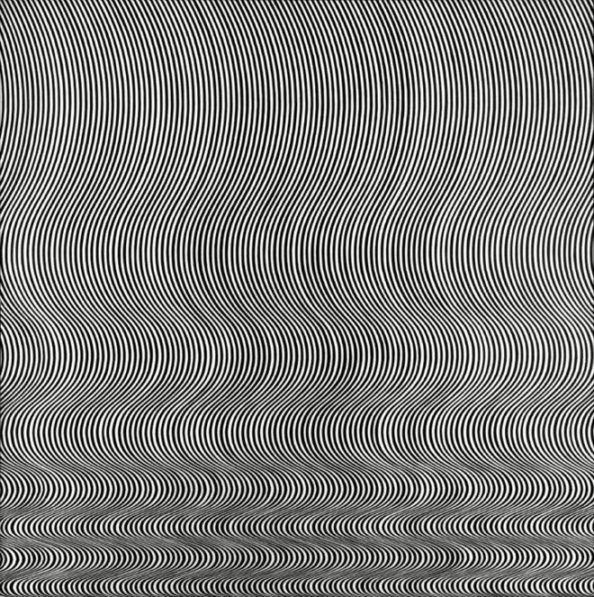

- 相长（xiāng zhǎng）
- 意思是彼此促进，在一起成长。
- 田野调查
- 所有实地参与现场的调查研究工作，也称为“田野研究”或“田野作业法”，它是人类学和民族学的基本方法论，源自文化人类学和考古学。田野调查的核心是通过直接观察法来收集第一手原始资料，这是研究工作开展之前的重要前置步骤。
朝仓直巳（1929-2003），日本构成教育家，日本筑波大学、文教大学教授，曾任亚洲基础造型学会首任会长和日本构成协会理事长。20世纪80年代始，受邀访问我国各大院校几十次，将构成体系完整介绍到我国，影响深远。
版次：2018年5月第一版
p3~p4 无论是今天的教师还是学生，在面对有关“材质处理”的教与学行为时，由于专业背景的局限，或多或少都会 “感觉”多于“理性”，“顺势”多于“预设”……结果往往是 开头偶然、过程繁复、结果无力。朝仓先生这套丛书以丰富的图文案例告诉我们，在 工学与艺术、精准与随意之间，确定存在一系列可供“艺术设计”所采用的“有效临界范围” 。悉心把握这样的临界范围，有关材质的教与学，将会是可规范进行、可精准掌控的。
p5 科学与艺术越发达，其基础便显得越为重要。学术的发展使得学科的分工越来越细，然而，分工越细，跨学科的问题就越应受到重视。
因此，在今天学问的专业化中，不仅可以看到旧体制大学中纵向型学科的发展，也随处可以见到同它横向联系的横向型方法。“构成”就是具有这种特色的一个专门领域。以往专门学科的分类方法以及教育系统中的专业，或以维数、材料划分（如纯美术中分成西洋画、日本画、雕塑等），或以对应行业划分（如设计中分为印刷设计、工业设计、装潢设计、建筑设计等）。与些相比， “构成”是从事教育研究，包括以上各种专业或行业所共有的基础性的重要学问。
其 具体内容，包括了涉及各造型专业的共同基础的形态————色彩、材料、构图、构思法等，这些方面的研究主题，包括从简单易行到难攀其顶的内容。
本书因系平面构成的著作，所以以上述中的平面关系为对象。对涉及色彩的内容，除在论述中特别需要外，予以省略。用节省下来的篇幅，对形态、构图、构思法及其他有关平面造型的技法，材料效果等的篇章予以充实，以扩充与深化平面构成的范围。因此，有可能会遇到对部分相对深入问题的解释，及对初学者来说出现稍感困难的专门主题。论及“平面构成”或“构成”一词时，有人会认为是属于一般性造型的基础，只是以初学者为对象的领域。但是如果把“构成”看作是一门专门领域，会发现其内容关系到相当高层次的问题，对这些研究的积累，将使构成逐渐向深层次发展。
本书另一个特点是重视造型的使用方法，即重视造型方法。我们生活在三维空间中，若想把它表现在二维空间即平面上，就迫使我们要为之付出巨大的努力，研究出特别的造型方法。例如，在三维空间的表现上，既可以使物体发出动作，也可以将立体的形态如愿以偿地做成实体。然而，若将其表现于二维空间中，那么除了在平面上“描绘”之外，别无他法。由于无法使物体本身发出动作，所以必须设法以“运势”或“运动感”通过视觉使观者在感觉上产生物体的动态感觉。所以，必须创造出特殊的画法，使人们借助于描绘方法或视觉，感受到平面上的立体感。这种特殊的画法并不只限于一种，而是数不胜数。这是人类从智慧和经验中创造积累出来的宝贵遗产。
本书从彩页部分开始，选登了20世纪初以来对构成有深入研究的艺术家的作品，并在后面正文的内容中，收录了一些活跃于第一线的艺术家的作品。从中可见，平面构成不仅对于设计直到了重要作用，而且同纯美术也产生了密切联系。特别是与构成艺术的紧密关系，更是毋庸置言了。
我们已经掌握了除立体感、运动感之外，在平面构成中的造型上的特殊创意，如韵律、透明感以及通过种种“错觉”表现方法的幻象。这些造型上的财富，包含了有关造型表现的重要基本要素，对于所有从事创作的造型艺术家来说，是值得一读的。对笔者来说，本书也是长年执教平面构成课程的指导性记录。
朝仓直巳
1984年6月5日
p26 为创造艺术设计所需的魅力形态，在指定的空间中巧妙地搭配各种形态，激发源源不断的灵感，提升自己的口味，必须掌握实际造型的体验。因此，不论是造型的技巧还是其方法论，均有必要尽量多知道一些。“平面构成”就是将这些内容放在二维世界中加以实践。在面对绘图纸或画布下笔之前，先把大家应该知道的理论作一个大概的论述，这是第一章的宗旨。
p27 如此看来，在我们的整个造型活动之中，广泛培养对二维空间的基本表现能力，在广大造型领域中是至关重要的。在这一点上，平面构成可以说是具有各类造型共同需要的基本造型活动之一。
图1 《蓝色三角形与黑色长方形》，K.S.马列维奇(K.S.Malevich)
https://www.mei-shu.com/famous/26306/artistic-67704.html卡西米尔·马列维奇(Kazimir Malevich)：https://www.mei-shu.com/famous/26306/about
图2 《蓝色与黄色的构图》，蒙德里安(Mondrian)网上同一幅作品名为《菱形成分3线蓝灰黄》皮特·蒙德里安(Piet Mondrian)与书中不同
.jpg) https://www.mei-shu.com/famous/26164/artistic-63759.html
https://www.mei-shu.com/famous/26164/artistic-63759.html
皮特·蒙德里安(Piet Mondrian)：https://www.mei-shu.com/famous/26164/about
p29 三体中的基础物理学并不是真的“基础”，不是浅而是本源法则
p30~p31 也就是说，基础造型是以各种造型领域（绘画、雕刻等各种设计等）中 共同存在的基础性重要问题为对象进行研究和教学的。具体地说，就是使形态、色彩、质感、构图、表现法、美感、直觉得以发展的教育方法，或探讨以机械、材料进行造型的可能性等。
以上已经表明，基础造型的内容是构成，而构成则是将上述问题作为研究主题的。下面就以其中的“形态”、形态构成中的“平面构成”为对象进行论述。
p31 基础造型就是构成，其中的形态构成分为：平面、色彩、立体构成。
p30图4 《浮雕》，B.L.尼克尔森(Benjamin Lauder Nicholson)只找到类似作品《1934年（彩绘浮雕）》（英文：1934 (painted relief)）本·尼科尔森，人名翻译有所不同
）本·尼科尔森.jpg) https://www.budarts.com/art/c546a4d2-a8c1-11e6-9b13-00163e005d08
https://www.budarts.com/art/c546a4d2-a8c1-11e6-9b13-00163e005d08
p32~p33 在创作中，不可或缺的因素是什么？这些因素中，最重要的又是什么？
让我们从最简单的问题开始探讨。造型表现首先需要材料，其次是加工材料所需的工具，以及使用工具的技术。工具或机械是智能产物，而技术的磨炼又需要经验。
那么，是否材料、工具、技术、智能、经验五者具备就可以创造出优异的作品？其实不然，其中还缺少极为重要的因素。对工匠来说，具备了上述五个条件的话，他的事业是有希望的。但对艺术家来说，这些只是必要条件，却不是充分条件。因为要成为一个 优秀的设计师或艺术家，必须要有丰富的创意（idea）及敏锐的美感（sense）。这一点是区别工匠与艺术家的关键。对造型艺术家来说，最重要的是创造力，而创意与美感之所以重要，是因为它们是构成创造力所不可缺少的要素。平面构成的最终目标就在于此。
搞创作不需要材料吗，加工材料不需要工具吗，使用工具不需要技术吗，制造工具不需要智能吗，熟练技术不需要经验吗，
材料、工具、技术、智能、经验这5者都具备也只是工匠，艺术家与工匠的关键区别是创造力，创造力 = 美感 + 创意，平面构成的最终目标就是培养创造力
设计师和艺术家绝不是割裂的。
P32图6《VEGA-TUZ-POS》，维克托·瓦萨雷里
https://www.mei-shu.com/famous/25471/artistic-147809.html维克托·瓦萨雷里(Victor Vasarely)： 跳转
p33 平面构成的目标在于 充分掌握二维造型，即平面表现的重要基本能力或基础能力，概括来说就是 用包豪斯精神发展出来的现代方法，来培养“造型力”。在造型力中，技术与知识虽然重要，但其核心仍然是创造力。为了培养对创造力而言最重要的美感和构思， 必须要学习现代艺术和现代设计的优秀成果，并努力把它们有效地应用于教学之中。因此，必须特别注意以下内容。
p34 在杰出的现代造型作品中，同时含有新的美感和新的造型方法的作品不在少数，像 M.C.埃舍尔、维克托·瓦萨雷里、马克思·比尔、勒内·马格里特等艺术家的作品就含有过去作品所没有的造型方法。 我们学习这些前人杰出的作品并非照搬，而是应用于教学中，并参考现代科学的方法。 推动现代科学迅速发展的方法之一，是一旦彻底 还原或分析到元素的程度之后，再将其综合起来。以物理学为例，分子、原子尚不能令人满足，还要以更大的努力，不断地探讨其终极单位的基本粒子。这种分析手段在其他学科的发展过程中也至关重要，如在现代医学或生物学领域中，最重视生命体终极单位的细胞或分子、原子的研究。这种现代科学共同的想法，也有利于构成教育。就是对物体加以分析， 抽出它们的属性或要素，多角度探讨它们的性质。通过实验去探求其造型的可能性，是根本性的关键。构成将由此获得新的教学方式和构思方法。当然，所谓造型的实验，意味着实际技术或实习制作等。 对于造型最根本也最重要的就是这方面的实践内容。
p34~p35 知识与技术是造型所必需的，然而如果只是僵化的内容，则用处不大。 具有灵活性，同时与其他事物有机关联起来，才具有更高的利用价值。 另外，造型中的知识与技术， 如果没有经过亲身实践，通常不会被真正掌握。 由此可见， 造型力应更紧密地同实践相结合，因为实践能够使经验更丰富，推动知识与技术趋于有机化，并 使思维更加灵活。这些活跃的思维、掌握的技术及丰富的经验，与形与色的敏感性、构成力和构思力， 一同形成强大的创造力。
有机是为了灵活为了变
有机：指事物的构成的各部分互相关联，具有不可分的统一性。
有机：可以形容事物各部分互相关联协调，就像一个生物体那样不可分割。这种用法强调的是整体性和内在的联系。
有机的结合：还意味着结合后的整体大于各部分简单相加的总和。各部分在结合过程中相互渗透、相互作用，产生了新的性质和功能。这体现了一种系统性的思维。
有机在哲学中的概念：p35 构成本书主要框架的 以下四章，是基于分析和思考， 着眼于物体或作品的形成要素、属性或成分展开的。例如在 第二章中探讨了造型要素。正如基本粒子的研究给科学带来巨大发展一样，在造型领域中，要素的研究也是十分基础、十分重要的。在 第三章的造型方法A、 第四章的造型方法B中，探讨了通过第二章所述的造型要素的特定用法，以及可以表现特殊造型的效果。如果将造型要素视为造型的单词或词组，那么第三章与第四章的内容便相当于单词或词组的使用方法，也就是“语法”（第三章以构图为主，第四章以幻象为主）。
p35~p36 第二至四章作为技法的探讨是很有必要的，至于在这些章节之中未曾提到而又十分重要的技法，则集中在最后的第五章。 第五章分为两个部分，第一节是继第四章之后，提出需进一步探讨的问题，并为进一步开始“构思法”举例进行了阐述。在第二节中，由于之前章节之中所探讨的多半是几何形态，所以这一部分以非几何形态为中心，搜集了日常绘画用具及纸张的相关特殊技法，继第二章之后，进一步加以延伸。
什么是？怎么用？怎么用的好用的妙？第二章介绍什么是造型的要素；第三、四章介绍怎么用；第五章介绍技法，就是怎么用的更好。
P33图7《着色明快的点缀》，马克思·比尔(Max Bill)，没找到 只找到类似的《八色组》马克斯比尔(Max Bill)
.jpg) https://www.mei-shu.com/famous/25471/artistic-147809.html
https://www.mei-shu.com/famous/25471/artistic-147809.html
马克思·比尔只是翻译不同其就是 马克斯·比尔(Max Bill)：跳转
P34图8 具有红色对角线的纵向30色连续系列化色例作品，理查德·保罗·洛塞，没找到 只找到类似的《进展》理查德德·保罗·洛斯(Richard Paul Lohse)
只找到类似的.jpg) https://www.mei-shu.com/famous/26202/artistic-62576.html
https://www.mei-shu.com/famous/26202/artistic-62576.html
理查德·保罗·洛斯(Richard Paul Lohse)：跳转
P35图9 《日冕》，安奴斯基维兹，没找到 只找到类似的，Splendor Of Red, 1965, acrylic on canvas, 72 x 72 in，理查德德·保罗·洛斯(Richard Paul Lohse)
 来源
来源
理查德·安努斯科维奇(Richard Anuszkiewicz)：介绍
理查德·安努斯科维奇(Richard Anuszkiewicz)：相关资料
P36图10 《流线》，布里奇特·赖利，没找到 只找到类似的，《跌倒》布里奇特·赖利(Bridget Riley)
 https://www.mei-shu.com/famous/25476/artistic-147693.html布里奇特·赖利(Bridget Riley)： 跳转
在进行平面构成创作时，首先需要的是意愿、目的等心理要素，以及将其实际表现出来的材料、工具等具体的“物”。关于前者已在上一章谈过，所以本章将对后者进行探讨。
p39 因为需要创作造型，所以总是需要某些材料。由于材料（material）决定形态、色彩、质感等要素，所以广泛了解材料、获得丰富经验是十分重要的。
其次，为了加工和有效地表现材料，就要使用或创造一些工具。因为这些工具最终要决定技法，所以对形态的形成有着很大的影响。从这一点上看，平时多加关注，并以创新的心态来使用工具，是尤为重要的。
p39图11《即兴曲28号》康定斯基(W·Kandinsky)
平面构成、色彩构成、立体构成，作为三大构成的这3堂课就是起源于康定斯基和包豪斯。
瓦西里·康定斯基(Wassily Kandinsky)： 介绍
p41 从以上列举的材料中可知，平日我们所用的材料只不过是无数材料中很少的一部分而已。例如，着色材料一般最常用的是广告颜料或绘画颜料，但是 每个人都应该思考，除此之外还可以用什么。又如被着色材料，除了绘图纸之外，还可以使用什么其他材料。
杰克逊·波洛克(Jackson Pollock)： 介绍
p42图14《无题》，萨姆·弗朗西斯(San Francis)，没找到 只找到类似作品，《Untitled (SFP94-33, SFF.1709)》山姆·弗朗西斯(Sam Francis)
》山姆·弗朗西斯，只找到类似的.jpg) https://www.mei-shu.com/famous/25826/artistic-179790.html
https://www.mei-shu.com/famous/25826/artistic-179790.html
山姆·弗朗西斯(Sam Francis)： 介绍
p43图15 用两种方法照射金属板表面的构成作品，卡尔·格斯特纳，没找到
卡尔·格斯特纳(Karl Gerstner)： 跳转
p44图16 铁线雕刻，亚里山大·考尔德，没找到 只找到类似作品《海伦·威尔斯》亚历山大·考尔德(Alexander Calder)
只找到类似的.jpg) https://www.mei-shu.com/famous/25517/artistic-148531.html
https://www.mei-shu.com/famous/25517/artistic-148531.html
亚历山大·考尔德(Alexander Calder)： 介绍
p45 在行动和表现之前，一定要了解材料的造型特性，同时也必须知道所用工具的种种使用方法。这些 不能单纯作为知识去理解，为了作为经验，了解造型的可能性，最重要的是先去接触这些材料。我们通常根据主题选用材料和用具，但是为使两者的关系更有生命力和灵活性，平时就要在 无目的、无主题的状态下，去接触材料与工具。以此获得的体验，无疑 将有益于终生。第39~45页的图，都是著名艺术家的作品，由于篇幅的关系，只能刊出少数几个例子。在本书第五章“技法的开拓”中，将以学生作品为中心，使用更多的例子来介绍直接接触材料所获得的体验，以及用充满创意的工具、材料、使用方法所完成的实验作品。它们是对平面构成所需材料、工具的实际体验，也是直接了解造型材料、工具特性和效果的手段。
尝试这种造型实验，不仅有利于了解材料与工具，同时有助于促进构思的灵活性及技法上的开拓。
李禹焕(Lee Ufan)： 介绍
造型元素的分类
p46 为了更充分地理解造型作品及作为基础的材料，其要素可分解为形、色、质感。其中，形可进而细分为点、线、面、立体、空间；色又可分为色相、明度、纯度。
图中➀的形，是着眼于维度而进行分类的，此外，也有着眼于结构、形态的感觉、文学性加以分类的方法。
几何学的形态，除建筑、机械、家具领域外、在现代也大量出现在绘画、雕塑和设计中，规则有序的结构形态日益增多，也不乏这方面的研究。另一方面，如后文（第254页~283页）那样，在现代美术中，依然采用许多非规则形态，这一点也不应忽视。鉴于上述观点，可将形态大致按图➁那样加以分类。
几何学形态列于➁的上段； 有机形态（有机性感觉的形）及偶然形态（用意料不到的偶然方法造成的形态）列于下段。
具有数理规则结构的形，有再现的可能，可以明确地定形，从这意义上来说，应是合理形态。与此相比，不具有数理规则的形，尽管想再现也是不可能的。也就是说，它的再现性是“不定形”的，从这个意义上说，是非合理形态。
再看偶然形态，从感觉上就是非合理形态。与些相反，有机形态没有特别非合理的感觉，这是因为这种形态是整理过的形态，它在视觉感性上接近几何学形态的缘故。尽管偶然形态同有机形态同属非定形形态，但从上述几点来看，具有很大的差异定形形态具有规则性，所以容易分类、整理、规范，与此相反，非定形的形态的特征是难以规范的，因而是难以分类和系统化的形态。特别是形态结构上的模棱两可，是很不利的。正如阿尔普所说，做得越多就越是一般无二，就越难区别出微小的差异。
左图中形是按维度分；右图是按形态感觉分。
形分为：几何形、有机形、偶发形。按书中的说法，定形应该是指几何形；有机形和偶发形是指非定形。
p47 在数学上，线与线相交的交点是点的位置。点不具有大小，只具有位置，但在造型上，点如果没有形，便无法作为视觉表现，所以造型上的点具有大小，当然也具有面积和形态。其形态有三角形或四边形，但以圆形表示者居多。圆点具有位置与大小，而其他形态的点，除位置、大小之外， 还有方向性。
上述为，点在数学上和造型上点的区别；除了圆点其它形的点会有方向感，如，播放键。
就大小而言，点越小则感觉越强【如图19】，越大则越有面形的感觉，同时点的感觉相对减弱。就点与形的关系来说，圆点最为有利，不论它有多大，仍会给人以点的感觉【如图20】。
点越小越有点的感觉；
太小的点不但难以辨认，其存在感也相对较弱。同样，轮廓不清或中空的点其存在感也会显得较弱。然而，尽管是小点，但如果内部充实、轮廓清晰，也可成为尖锐的点。基于以上的讨论，在平常使用点时，必须特别注意哪些点在视觉上强劲有力，且具有美感（图18~图21）。
内部充实、轮廓清晰应该是强劲有力的点，下面②中提到点形的强度与面积、形态有关。但不清楚具有美感的点是什么样？下面的5项，应该就是由点产生的美感。
不画点就不能表现点吗？
如果四周被某些形所包围，那么中间留下的空白则变成了点状。将此原理具体化时，会有种种方法：
把线切断，并稍稍错开只有点大小的空隙（图22、图23）；用面（内部充实的二维形状）包围，留下点状的空白。 在画面上挖洞（图24）。
可以利用以上这些方法来表现点，虽然点的真实感较弱，但仍可以表现细致的感觉。
如星座一般， 点的靠近会形成线的感觉 。关于这些问题，本文将连续两页加以讨论。
距离较近的点的引力比距离较远的点更强 ，如果有计划地加以处理，就能表现出一定的形态（图26、图27）。其次点之间的 “引力”同点形的强度（与面积、形态有关）成正比地增强。在大小不同的两个点之间，小点会表现出被大点“吸引”过去的感觉（图25）。
带有方向性的点，例如在处理椭圆或短的线段的时候，通过思考结构的方法，可以做出特别复杂的一维表现（线化表现）（图29、图30）。图31是有效利用点的大小的线的表现。由于点的方向逐渐变大，使人感觉到强烈的方向性。
线交叉的位置称为“交点”，但在造型上，点的意识并不明显。图28在直线的交点上放置明显的点， 使交点的效果更加突出。
点的线化，有视觉引导作用；
P49图25 点彼此靠近形成许多线段的感觉，布里奇特·赖利，没找到 找到类似的《白盘1》布里奇特·赖利(Bridget Riley)
.jpg) https://www.mei-shu.com/famous/25476/artistic-147654.html
https://www.mei-shu.com/famous/25476/artistic-147654.html
布里奇特·赖利(Bridget Riley)：跳转
p50图30 具有方向性的点的规则构成，H·贝姆，没找到
p50图31 不具方向性的点的集合造成的线化现象，阿尔米·马比尼叶，没找到 找到类似的《无题》阿尔米尔-马维尼耶(Almir Mavignier)
.jpg) https://www.mei-shu.com/famous/25462/artistic-147752.html
https://www.mei-shu.com/famous/25462/artistic-147752.html
阿尔米尔-马维尼耶(Almir Mavignier)：介绍
p51 点的移到产生线，许多点的聚集又形成面的效果。另外，利用点的大小或排列上的疏密也可以给面带来 凹凸感。
通过巧妙的构成，点可以表现曲面、阴影及其他复杂的立体感。从点彩派的修拉到欧普艺术的赖利，用点来创作作品的艺术家虽然为数不多，但在印刷设计的领域中，因照相制版的发明，无数点的造型每天都从印刷厂送到人们手中。照相制版是把影像中的浓度协调换成单位面积的大小点来表现，只要将报纸广告中的影像透过放大镜，便可看清其中密集地布满了各种大小的点。大点聚集的地方偏黑，而小点密集的地方则显出灰色调，出色地再现了照片中细致的特点（图34）。
乔治·修拉(Georges Seurat)点彩派的代表画家： 介绍
不知道是不是点彩派启发促进了日后的照相制版、报纸印刷？
图32的例子是使点周围————相当于田间小路的空白————一点一点地产生微妙的变化，并在四角点密集形之中造成精巧的疏密。这种收官 带来了一种“光感”（好像仔细研磨过的金属曲面闪闪发光的效果），表现出强烈的现代感。
在印刷中， 网点的重叠会产生干涉条纹般的图样，因而无法获得清晰的照相图版。这种条纹称为“波纹”，这是因为整齐排列的点在叠放时的少许交错而造成的。
为了制作波纹的网纹片，与网点距离大的相比，使用细密而秩序井然的网点效果更好。其次，网纹片的网点相同或差异微小的较好；结构相同或近似时，更易制作清晰的波纹。
波纹也可利用线条来形成。在平行排列的透明板上，贴上秩序井然的点或线的集合体，可形成空间性的波纹。这种空间性的波纹在人的视线移动时， 可以形成具有动感的波纹。
上述了波纹是怎么产生的，怎么制作理想的波纹效果。
感觉图39~图42 共同点都是黑色背景，点本身是发光的在黑色环境里产生的构成
p54 极薄的平面互相接触时，其接触处便形成线。曲面相交则形成曲线。几何学上的线是没有粗细的，只有长度、方向与形状。在造型领域中，因为必须在视觉上表现，就会出现与点相同的表现问题。
p54 点移动成线，线移动成面，面的移动则形成体。在数学中，为尊重这些形态的维度，视点和线为没有“量”的东西，纯粹就形态、位置与方向来讨论。然而作为造型，必须将其视觉化，所以，点应该是具有面积的形，线也应该具有粗细和宽度。然而一旦这些面积和宽度的量增大，线的形象就会减弱，面的形象增强，很难辨认出它的边界。这也因周围的情况不同而有不同的结果。例如在一群相同或类似的线群里，即使是相当粗的线，也容易被看成是根线。
p55 粗壮而边缘明确的线条显得 十分有力，反之，细长的徒手画线条就显得 微弱无力。画线的工具，正如第41页所列，各类非常之多，但重要的是要了解各种工具所具有的效果，知道其特征，并能活用于创作中。例如感觉优雅的流畅线条、有速度感的线条、强劲有力的线条、平滑的线条、单纯的线条、复杂的线条等。在画一条线的时候，也可以表现出不同的感情来。
我们知道，由于选择的工具不同，可以画出感觉上具有细微差别的各种线条。从历史上看，在十九世纪以前的绘画中，线条用得很少；相反，在东方绘画中，线条则用得很多。在现代，欧美的作品中使用线条的作品非常之多，几乎遍及绘画、雕塑、设计的整个造型领域。越是抽象的作品，线条越显得重要，这一点值得特别注意。
如果把点的形状称之为“点形”，线的形状称之为“线形”，二维展开的面的形状称为“面形”的话，那么“线形”又可分为直线与曲线。后者又分为开放的曲线及封闭的曲线，这样更为方便。数学上把直线定义为曲率为0的开放曲线，而在造型上，曲线的性质不同，所以在分类上应当明确加以区别。徒手画的线有随意的感觉，而几何学的线则是规矩端正的感觉。
线形分类
封闭的线形成形，把线的内部涂满即可成为“面形”，它可以说是内藏“面形”的“线形”。 而“面形”的轮廓是线决定的，从而相比“线形”在造型上具有十分重要的作用。
我们的祖先很早就会使用线来表现形，为把事物或具体物形加以形象化，也会经常使用线。只要调查一下用线画的图形、标志、记号、文字等无数在形中使用线的例子，即可一目了然。而且，我们现在所用的书写用具，大部分也是画线的工具，所以线的意义 十分重大。
的确，线是物体形象化表现的有力手段。但如果脱离具体的形来观察，就可以发现， 线本身就具有卓越的造型力。注意到这一点对于构成是十分重要的。包豪斯的教授们和之后的前卫艺术家们曾研究过，并通过创造加以证实。可以说，这是20世纪艺术上最重要的成果之一。鉴于此，可见即使只是单纯处理线，也可以产生许多卓越的造型效果。但是，直线作为纯粹的线，是自然界中少见的形态，它如同其他许多数学曲线一样，是人类创造的形态。
形的轮廓非常重要，线的意义十分重大是不是指轮廓确定后的分割？
粗线有力，细线尖锐纤细而神经质，又具有速度感。在相同粗细的线的构成中，如果加入不同粗细的线，则可进一步加重其效果。此外， 线的粗细可产生远近关系，人在感觉上会认为粗线在前，细线在后（图53）。
p57图51 用算盘随意滚出来的神经质感觉的线，其中的神经质感觉的线在此做出了解释
p58图53 粗线显得近，细线显得远；感觉很像蒙德里安的画，但不应左右对称才对
这是关于线的明度问题。如果线的粗细和长度一定的话， 深色的线会比淡色的线显得近一些（图55）。图56是把细平等线在小点密集的透明坐标纸剪下来制成的，宽条是粗线的图案。一根线上有色彩层次的变化，同时又是折线，这两个因素使画面产生强烈的凹凸感。
p59 将粗细、长短、明暗等一切条件相同的线搭配一起时，间隔狭窄的线群比间隔宽松的显得远一些。利用这种关系，进行系统化绘画构成时，就可以表现出强烈的远近感与立体感（图57、图58）。
p60 综合以上的三点，在图59之中，各种要素产生综合作用，产生复杂的远近感及空间感。 蒙德里安的作品虽说看起来极尊重平面性，但是由于线的粗细稍有不同，平行线间隔略有变化，竟巧妙地表现出三维的效果。
p60图59 平行线构成，由于线的粗细、间隔、浓淡的变化，形成了远近的感觉（参阅本书彩图7），应该是参阅彩图6，这张图很能说明粗细、浓淡、间隔对画面的影响
p60 毕加索与马蒂斯简洁的人体线画，通过线条方向的微妙变化表现出人体上的复杂凹凸处（图60）。在日本平安时代的画卷中，曾利用 斜向直线表现出空间的进深感（图61）。
又如第88页图131所示，向一个点集中的斜线，亦即放射状线，则使用了透视法，表现了具有明显远近感的空间感觉。
由此看来，线可以因其方向的改变，表现出不同三维效果。
p60图60 一条线的方向变化，表现立体的曲面，没找到 找到了马蒂斯的速写：《侧面的女人（向左转弯）》亨利·马蒂斯(Henri Matisse)
.jpg) https://www.mei-shu.com/famous/27509/artistic-126406.html
https://www.mei-shu.com/famous/27509/artistic-126406.html
亨利·马蒂斯 （Henri Matisse 1869-1954）： 介绍
巴勃罗·毕加索(Pablo Picasso)： 介绍
p61 不直接画线，而是间接制造线的方法也有很多。这有时会因周围的情况而有所不同，但是总体看来明显还是线条。即使不画线，但仍可见线的存在。
......
图62用异想天开的方法形成了新型的线条。在佩服其独特性的同时，也感受到其优雅丰富、活跃动感的延伸感。所谓的线犹如两点之间西边的路径或丝线，因此，其前提一定是“连续”。然而图62却破坏了这个重要的前提，以不连续的方法形成了非常有趣的线。除此之外，还有许多种表现线条千变万化的方法。
p62 图65是平等线的构成。画平行线时，会在线条之间形成负线（白线）。图65是两种负的白线（细的及稍粗的白线）与一种正的黑线并列而成的简洁构成。
p62图65 平行线的间隔形成的负线（白线），粗白线显得比细白线更近
把线彻底切小后便有点的感觉。这种点如果排成一行则有线的感觉，这就是我们常说的“虚线”（图66）。
虚线的构成适于创作感觉柔美、轻快的精巧作品。裁缝使用的滚花刀就是使线点化的工具。裁剪布匹时，用滚出“点线”作为剪裁的记号，这种线最好是不明显的弱线。
试着利用光点画出光的线条。找出动态的点状光源，然后把相机快门调到B门，经过长时间曝光，便可拍出光迹照片。图70是拍摄汽车前灯和尾灯所得的画面。
p68 如果大量密集地使用线条就会形成面的感觉，用线来创造曲线面的感觉非常有趣。图79、图81就是利用逐步倾斜的直线形成扭曲曲面的感觉。
用线来创造曲线面的感觉，这不就是素描嘛
p69 图82~图84的三件作品，是通过将 部分平行直线曲线化使平面显得曲面化的例子。线的方向的改变及疏密所产生的效果，有助于加强曲面感。
在轮廓线内部饱满的平面形中，可以感觉到充实的体量魅力（图85）。尝试画一个正方形或圆形，然后将其内部涂黑，这个形就有稳定、充实的感觉。用广告颜料等无光泽的颜色也可以，而用有光泽的印刷油墨涂刷的稍大的正方形或圆形，更是魅力无穷。这是几何形态整齐饱满的优点，也是因为内部饱满面形的充实感。由此可以理解为什么俄国的构成主义代表人物马列维奇曾把平涂的大正方形面称之为绘画。
卡西米尔·马列维奇 (Kazimir Malevich)：跳转
如果是封闭的线，无疑属于二维的形态，只是中空而已（图86）。然而轮廓线越细，空洞的空间“面形”的感觉便越薄弱，“线形”的感觉越强烈；反之，轮廓线越粗，内部空间越窄，面形的感觉越强烈。
线越细中空越大，越像线形；线越粗中空越小，越像面形。
感觉上较弱的面形，在体积和体量方面显得不厚重，形成一种轻而弱的面形。例如集合细的线段，充满空隙的形。这种形的要素是线，集合后形成面形。线与线之间有引力作用。
p72 本书是以平面构成为主题的，所以将立体形态除外，但对于同平面关系较密切的立体问题也稍加讨论。
p72 三维形态除了可以将造型如实地表现为三维形态以外，多半是在二维的画面上表现，且效果不亚于前者。这在记录、传达、保存、管理上，确实是非常必要的。那么，如何才能将立体形态表现于平面之上呢？这就引出了表现方法的问题。
p72 把立体或空间形态表现在平面上时，首先用的是透视图法。这是把形态照着我们所看到的那样，忠实地表现出来的画法。它不仅是文艺复兴时代以来许多画家爱用的画法，时至今日，也盛行于建筑设计构图产、产品设计的透视图中（图91~图94）【应该是（图93~图94）】。
p73 正投影图法（垂直投影图法）【如图91~图92】的平面图、立面图、侧面图，是把所见物像是由互相垂直的各个方向去加以分解，以便正确记录三维的物形。这种表示法的长处在于虽然形被分解，但许多实际的长度、面的实际形状都较容易掌握。
正投影图法 很类似3DMax的三视图
p73 在平面图、立面图、侧面图的表示法中，难以表现自然原貌的立体感状态，于是用透视图与上述正投影图的折中方法，使其可以从概念的角度来掌握整个立体形态，同时也便于计算出实际的尺寸。而等测图法与斜投影图法就能达到这种效果，它能将立方体的三面综合成一个形并表示出来。从正投影图法的角度来说，是将分解的三个图面放在脑中组合起来以后成为一个完整的形，而上述的图法表现的是具有立体感的图形，所以具有明显的现实感。主要面的形态、尺寸也可以正确加以掌握，十分便利。由此可知，对立体形态而言，进深的表示是何等的重要。
投影图画法有上述各种类别，虽然各具优点，但其缺点是任何方法都不能将形以实际的三维状态，即以完全的立体形态表现出来。
对于立体形的图面，特别是从制作该形态的立场出发，如果图面能够同时显示主要面的实际形状及其便利的组合方法，将极为方便。展开图便是为此而设计的。
如果是立体形，包围该形的表面形态具有决定性的重要意义。 在二维的形态中，轮廓的意义也非同一般。不论是内部实心的面形，还是单纯用线包围的非充实形，其给予观者的感觉在两者之间存在极大的差异。而立体形，一旦被外表面覆盖且见不到内部时，在视觉上如同充实形。金属或不透明塑料的雕刻，便是得用这一原理来制作的。在使用昂贵材料作大型作品时，就不需要费时费力地做成笨重的实心作品。在多数情况下，使用面材来加工更为容易。
维克托·瓦萨雷里(Victor Vasarely)： 跳转
仅用颜料平涂地画在绘图纸上，也能表现出明显的立体感，这在平面构成中并不少见。尽管它不是在画面上起伏的真实立体，但看起来却仿佛是充满起伏的立体形态，这是一种幻象。这种立体幻象使形态充满魅力，因此成为平面构成中的重要课题。关于这个幻象问题，笔者将尽量搜集实例，在第四章中详细加以讨论。
P75图102《构成的星座》，约瑟夫·艾伯斯，没找到 只找到类似作品：《天花》约瑟夫·亚伯斯(Josef Albers)

约瑟夫·亚伯斯（Josef Albers）：跳转
想画面有立体感，必不可少
这是以平面为基础进行的立体化创意，或者虽然是起伏不平的堆积，但仍显得十分平面化。同时具有平面与立体两个要素的造型，即所谓的半立体。
人的身体本身就是一个立体，并居住在三维的世界中。所以人往往挺特别喜欢立体的东西。在平面世界的表现中想方设法作立体的表现，使实际上非立体的东西表现出立体的感觉，这是追求幻象的行为。
在半立体中，并不追求幻象的效果，而是把具体的平面立体化当作现实问题，所以不仅在视觉效果上是立体，同时在触觉上也必须确认是立体。这种“触觉”的参与会产生极大的造型效果。
如果能够达到上述效果，不需要起伏很大的半立体，即使只有几毫米高的半立体也可以。平坦的面凭借稍许的隆起便能产生 浮雕的造型效果，十分雅致又显得十分鲜明。半立体经过立体化后带有阴影，因此也是具有光意识的造型。例如将雪白的绘图纸加工成半立体时，可看到柔和阴影的美感。
p77图109 即使稍有厚度，对于造型来说也具有重大的意义，《ROUE FORET II》，让·阿尔普（Jean Arp），没找到
让·阿尔普(Jean Arp)：介绍
p80 如果只是具备了造型要素，造型行为还无法成立，必须把这些要素巧妙地组合起来，构成愉快而且有紧张感的画面。也就是说，问题在于造型要素的构成方法。本章将探讨此问题。
对比写作的话，造型要素相当于文字或词汇，但感人优美的文章需要把这些要素巧妙地组合起来成为作品（composition），也就是把词汇组织（compose）起来。由于造型上也有相当于文法、构词法或修辞法的东西，故在此便称之为“造型文法”。
目前，对这个问题已有多方面的研究，这使我们了解到丰富的方法论。其内容可分成两大类：其一是关于是形的分割或组合等“构图”相关问题的造型方法A（第三章）；其二是探讨错视、立体感、动态、韵律等物理上并不存在的东西，通过造型要素的创意性组合，借助视觉的功能，能在知觉中感到其存在的“幻觉”，关于这个问题则列于造型文法B（第四章）。
本章探讨的形态构成方法又可分以下两大类： （Ⅰ）离心的构成 （Ⅱ）向心的构成
所谓形的离心构成，作品的整个面积随形的增加而增大。也就是说，最初组合的形逐渐向外扩展，作品的正体【整体】面积也在增加。与此相反，向心构成是指在范围一定的情况下，加工其面积内部，逐渐作成充实的画面。单元式造型或星座般的散点组合属于前者，而画面分割则属于后者。
本章讨论完上述两个项目后，拟就平衡、对比、调和等有关构图的平衡感觉，另设一节加以讨论。
紧张感，在p94图147中，提到过
方法论，就是怎么实现
离心构成：个人理解比如，用砖块盖房子、乐高积木
画面分割，指在轮廓确定之后？
p81 很久以前，笔者写过一篇题目为《图形设计中的加减乘除》的连载文章（《Desgin》1964年1~7月号，日本美术出版社），下面是当时使用的图片，其中属于计算的操作有如下七种，笔者曾得用图例说明。
P81图110注重于重叠、连接、分离的形的各种组合（朝仓直已《图形设计中的加减乘除》）

分类的要点基于形的三种类型组合方法，即“重叠”“连接”“分离”。正如在彩色印刷学所见，“重叠”的操作对印刷设计是极为重要的。把印刷要素（活字或格线）“分离”地加以组合的活版方式，也是印刷中的重要方法。笔者曾强调过，从这里引申出来的单元式造型方法，才是同技术密切配合的印刷设计方法。
印刷设计中或者说平面设计的造型方法与活字印刷这种印刷方式密切相关，前者一定会在后者的方式中得到启发
在这种印刷设计中，例如，颜色“重叠”而产生第三种颜色或形态，或者以单元式构成法来探讨“连接”时，由于形态连接组合而出现形的融合或间隙空间，“重叠”是形态构成上的有趣现象。与之相比，“分离”是使形态分离组合，所以形态上不会产生太大的变化。
形态重叠方法有如下三种（图110）：
p84 图120是图119所组成的形。可以看出原来的造型变化竟如此之大，这是什么原因呢？
所谓连接组合，是指形的轮廓具有重复的部分，两形的界线像消失了一样，两形已融合并成一体。当线的图形含有许多间隔空间时，形即使融合，也多半能保留部分原形。至于相连的形，若涂上同一颜色，并且形的融合部分面积较大的话，原先的形会变得完全看不出来。
p85图124的连接构成非常巧妙
p86 因为是把不同的形体分离组合，所以在组合完全异质的形体时，必然是难以归纳的。与些相反，对相同要素的形体，在尊重它们具有共同特点的情况下加以排列，则容易得到规整的构图。组合相互间形状各异的形体时，也是以结构类似或连续的组合更容易归纳（图125~图127）。
形体分离组合情况下，形与色都保持原状。反过来说，在形与色的组合构成中，分离组合创意的范围很小，有时甚至无所作为。
图128是巧妙地把规则性及没有数理规则的自由性混合起来的点的组合。 图128 展览会通知单，方形的点从上而下，分别是红、橙、黄、绿、青、紫的彩虹色变化
向一点集中的线会形成集中定向型的构图。它具有强烈的统一感，并且多数情况下具有动感，所以在很多情况下都利用这一组合进行造型设计。这个点多半带有透视图的消失点的性质，它的位置在画面上的任何地方都可以，但很少选在画面的边缘。
图132由于形（文字）的大小及旋转位置选定得好，所以呈现极为简洁的表现，其构图的效果与一点集中定向型的构图相似。
图133的一点集中型构成是由形的大小、浓淡、方向性等造型效果的协同作用所形成的。同第91页的图137（扩散形）比较，其效果更加明显。
p90 这是同上述的组合相反，在感觉上由中心向四周分散的构图。为产生这种视觉作用，在形的组合上要设法使眼睛集中于中心，然后再把视线移向周边。
图134扩大了中心图形的空间，但越靠近画面的周边，空间越窄。如地球仪的经线与纬线，越靠边缘其间隔便越狭小。
图135有一种变焦距效果，复层的文字只有最前面的部分较为强烈，其他部分则如影子一般地拖着尾巴。
图136使人先注视到色彩强烈的中心部分，然后视线才逐渐称身周边。图形也像箭头一样，具有射向左右的方向性。图137与图134原理相同，即眼睛先注意到中心面积较大的形，然后再向周围较小的、较弱的色区移动，整幅作品属于扩散型的构图。
p92 左右对称的构图缺乏动感，但却稳定、和谐。如果它能表现出特别的感觉，就可变成用途广泛的流行形体。例如交通标志、社徽及其他商标等（图138）。它们虽然缺乏动态或立体感，纯属平面构成，但极其简洁明快。相对后面提到的均衡美，从这些形态中所见到的静态的、稳重的、充满秩序的美，被称为对称美。
图139虽然同属商标类，但同上述徽章相比，稍带动感。因为该倾斜的结构具有支配画面的力量，同时该图形又属于非对称形。它不仅在局部显示出立体感，同时又具有回转对称的结构。不过就其整体来看，仍是平衡规整的形状。虽然不是正对称，但不论水平方向或垂直方向，与对称的近似是一目了然的。
在活字的版式设计方面也是如此，像通知书或证件之类严肃而庄重的东西，多半借助于左右对称的集中组合。折中、对称的组合具有高雅、安稳的感觉。图142是文字组合实例，内容是通知在教堂举行婚礼的请帖。
上文中的折中应该指的是居中
p92图139 商标中所见的稍呈动态的对称之美，《G标志》，龟仓雄策
卡尔·格斯特纳(Karl Gerstner)
设计程序创想家卡尔·格斯特纳及其成长路径：相关资料
卡尔·格斯特纳的《设计程序》一书对平面设计和程序理论产生了深远影响：相关资料
卡尔•加里斯纳(Karl Gerstner)一本经典，带你领略瑞士设计的精髓：相关资料
他在网格系统方面也很有建树：相关资料
P92图141《EROAD》，维克托·瓦萨雷里 网上名为《Untitled》无题的意思

维克托·瓦萨雷里(Victor Vasarely)： 简介 作品 简介 相关资料 相关资料 相关资料 相关资料 相关资料 相关资料 在室内设计的应用
在等量等距的折中组合中，会产生对称之美。与此相反，还有把造型要素偏置于画面一侧，破坏均衡的组合方法。如果把它放在天平上称一下，它没有失去平衡，但在视觉上失去了平衡。此时，将产生充满紧张感的均衡美。这是基于不平衡的平衡，比对称美含有更多的动态要素（图143~145）。
从本页的作品中任选一个，来对照上述现象，即可一目了然。例如在图147中，文字尽可能地组合得小一些，并挤放在版面的边缘，造成紧张感。靠近底边填充饱满的这种组合方法，使人感觉到中央的宽阔空间，而且使画面产生了愉快的对比和轻快的感觉。
P94图145彩图15 偏移的图案，《色彩·形式·黄色》，卡尔·格斯特纳(Karl Gerstner) 只找到相关图片
https://book.douban.com/review/15647270/卡尔·格斯特纳(Karl Gerstner)相关资料
p94图146《脉》，山口长男，没找到 只找到其它相关作品《曲形》山口长男1960年作，油彩画板
https://www.mei-shu.com/famous/25837/news-190013.html工业革命以来的技术革新，在产品制造上强烈地推动了标准化生产的观念。一台机器上使用的零件也可广泛地用于其他机器上，这实在是一种革命。其意义不仅是追求合理化的结果，同时也是追求合理化的出发点。所以，许多需要合理化的产品制造方法，也越来越朝这方面做深入的研究。于是，在平面设计、工业设计以至建筑设计等广大领域中，都在进行单元组合的“单元形式造型”。这里暂且站在非实用的观点上，探讨一下单元形式的造型。也就是抛开功能问题，纯粹将其作为一个形态问题，从构成的立场上进行探讨。
从“离心构图”的平面构成来思考单元形式造型时，首先应该考虑哪些事情呢？
在单元形式造型中，只要决定一种单元形（或仅仅几种单元形）后，将它们组合而成的形体的变化是无限的。当未能预料的形体出现时，是饶有趣味的。
然而，选择什么样的形体作为单元形则要考虑“单元形的形式决定”；其次，把单元组合起来的具体方法，则是“构成方法的研究”。这两点是基本要素。
总之，平面构成中单元形式造型所研究的，是同一形体所创造图形的变化，以及使用这种方法可以产生哪种类型的集合形态。这是将结构从离心的或复制的角度来加以探讨的构成问题，也是在严格的限定条件下，重新综合研究上一节的重叠、连接、分离组合等问题。
单元形的形式决定，是指怎么来确定一个单元形。
构成方法的研究，是指具体怎么组合。
严格的限定条件，是指使用固定的单元形来做重叠、连接、分离组合。
为使复制构成的变化丰富，单元形以简单的几何形态为好。其次，基于前面一节讨论的结果，在把单元形群集化的过程中，必然发生形体聚成一团的“形态融合”，或由单元形所包围的“间隙空间”（虚形）等形象。所以，在选择单元形时，以选择容易出现这些效果的为好。
基于以上的考虑，把正方形对角线及垂直二等分的形结合而成箭头形（图148）。这个形的各边之比1：2：2√2：4，角度只有45°和90°两种，是一个简单的形体。
P96图148

把两个单元形组合起来的方法有单一单元形组合及混合单元形组合两种。单一单元形如A1+A1或A2+A2，即以同形相结合的纯粹形；混合单元形如A1+A2,单元形虽然十分相似，但严格地说，是指不同形的混合。两者均因可能融合，故可接合成多种新的形体。
再观察单元形之间所造成的空间形态。
可以考虑两种方法，如图154那样的分离组合，以及图156-a、b那样的单元形连接而成的环状组合。特别是后者，将会出现意想不到的简易形体及整齐的负形空间形。
图156的两个造型，都是4个混合单元形的集合，采用（A1+A2）X2的方式，所以和图153组合相同。只要将组合稍加改变，便可出现完全不同的负形空间的形态。图155、图157两件作品作用A1单元形做规则化的组合，并形成多形的负形空间；第84页的图121、图123也是以同样的单元形组成的，其中图121和本页的图155中值得注意的是黑、白的形状相同，也就是说，其单元形与“负形空间”形态相同。这种单元形如果巧妙地组合的话，可在单元形的每一边进行融合，将整个画面都用单元形填满，形成全面融合现象。这说明了这些单元形如瓷砖一般，具有完全的空间填充性（图149的8个图例也是如此）。这种问题如果作为向心的造型问题来处理的话，便是把限定形体的二维空间作等形的分割。关于这一点，将在本章第二节“分割与比例”中的⑤“瓷砖工分割”中加以讨论。
p100 同单元形的选定相并列，单元形造型中的另一个重要问题是上述关于构成方法的研究。
构成方法大致分为两种，即规则构成与自由构成。自由构成因不拘泥于规则，只是把单元形自由地组合，所以专门依赖平衡的感觉，在构成方法的研究上，并无限定性。所以，这里侧重于采用数理秩序来组合单元形的方法。其次，在单元形的组合法中虽有重叠、连接、分离，但若要全加讨论，范围将过于庞大，所以本文仅限于“连接”方法的探讨。
至于单元形，则不仅限于当初所定的A1、A2，正如第98页以前所展示的图例一样，将与之接合所形成的形也作为新的单元形参与构成。
如上所述，集中了目标和条件后，笔者同学一起进行单元形的复制作业。因为参与的学生较多，所以获得了许多资料。将它们按类型划分后，有以下的七种（“自由组合”因为后面还要讨论，故这里暂不介绍）：
这里以图例说明上述各项的研究结果。
第100页的图例就是线状的发展。把单元形用同样方法、同一方向连接起来，所以操作上最为简单。
单元形的使用方法并不只限于单纯的一列，在线状的构成中可用多种方法来增加宽度（图158、图159）。至于图160，不单是线状的发展，同时又明显地使用了面状的展开。这是线状发展向面状发展过渡的例子。
这种线状的构成会不会联想起：金项链、金手链
点线面的灵活应用，点线面变成具体的形。
当单元形向二维方向组合时，可以形成比线状发展形态更为丰富的多种网格。它们将单元形发展到线状之后，再向其他方向展开，便可简单地形成面。如果一开始便以二维构成为目标来设计结构也是有效的，但二者难分孰优孰劣。
单用同形加以组合，也有多种变化方法。由于单元形是边连接边组合起来的，所以就产生了种种负形空间，这可优化造型效果，从图形与背景的关系来看也很有趣。
图162~图166是单元形的面构成形成的网格结构。
这种面状的构成会不会联想起：布料上平铺的各种花纹
这里的网格应该就是骨骼
只有连接才会产生负形
把线状发展的形弯曲并将两端连接，便可形成具有大型“负型空间”的环形。无论如何，它是十分完美的图形。
将单元形打乱后作为新单元形来形成环状组合，可以形成意想不到的负形空间（图167、图168）。
反之，用简单的形做单位接合形成圆周形时，便可以形成明显的环状结构。如果觉得单调的话，可以将些圆周整体作为新的单元形多次复制，尝试做出较大的群化单元形（图169），其负形空间也将更为复杂化。
这种环状的构成会不会联想起：埃及项圈上的装饰。环也可以平铺成面，如p104图169
从画面中心开始，向画面周围空间外延性地组合，便形成放射状的结构（图170、图171）。
这是“各种组合”中提到的具有集中或扩散感觉的构图。但是，这种结构难以形成负形空间，这是它的一个难点。
这种放射状构成会不会联想起：宽敞大厅、大堂的地砖图案
集中和扩展感的构图都是，从画面中心开始，向画面周围空间外延性的组合。
通过镜像反射操作而形成的左右对称的单元形造型，在单元形造型当中，属于十分严格而规整的造型（图172、图173）。
图174是单元形融合所形成的负形空间，它的形状同单元形的箭头形相同。
镜像反射的构成会不会联想起：面状的对称图案的盔甲、锁子甲；线状的对称图案的桥上的栏杆
以上所探讨的例子之外且不属于自由构成的，即具有某种几何结构的图形并不多见。在这个系统的图形实例中，极少有优美的图形。
图175是使用A1+A2的箭头组合，形成S形的结构。图176的意图在于形成大箭头单元形，这也是本节的中心思想，遗憾的是没能清楚地表现出箭头的锐角部分。看来，还需进一步研究单元形的构成方法。
在整个造型行为中，向心型行为所占的比例格外地大，而其中较多的部分则是分割。
在平面造型中，能够表现的空间并非无限大，只限于例如画纸、绘图纸、画布等。平日我们都在有限的形与面积之中工作，因些有关空间的分割或区划整理的研究非常重要，不妨说是基本的造型行为之一。
例如印制某种印刷品时，要考虑如何在一定的空间内把文字、图片或图形巧妙地组合起来。此时，分割的构成就成为其造型行为的基础。在长方形的边上画出垂直的直线或水平线，形成分割空间的网格，网格的好看与否决定着版式的优劣。因此，分割对于编辑设计来说是十分且重要的造型行为。
在设计领域中，这种例子还有很多。在纯美术领域也是如此，蒙德里安以后的构成派艺术画面的分割也是基本的造型行为。
基于以上的观点，在研究平面构成的分割时，应重视垂直、水平的分割，并区别为等分割和非等分割，笔者分别整理成5项和3项内容。至于作为分割基础理论的重要比例关系的研究，将放在下节中讨论。
向心型：个人理解是，对于操作的空间比如，画纸、画布、屏幕不可能无限大，而是在有限的形与面积内工作。
分割就是网格系统
绘画、设计等平面造型行为中，向心型占大多数其中较多都是在处理分割。比如设计中，网格系统就是在一定空间内把文字、图片、图形巧妙地组合起来； 在纯美术领域中，看新造型主义蒙德里安的作品和书中图例如出一辙
在分割中应重视垂直、水平的分割。分割区分为等分割和非等分割，书中整理了5项等分割、3项非等分割
对于分割基础理论中非常重要的 比例关系 下节会说
等分割分为两种，即等形分割和等量分割。后者分割而成的形，在形状上有所不同，但各自的面积必须相等；而前者的形状必须要完全相同。也就是说，等形分割之后的单位形状必须完全相同，它同等量分割比起来，是更为严谨的造型行为。
图178是瑞士当代艺术的作品，图179~图181是学生习作。每个作品不论形与量都分割得完全相等，显得十分整齐，给人以极其明快的感觉，这是等形分割的特征。
等分割分为等形分割和等量分割两种。等形分割之后的单位形状必须完全相同；等量分割后形状可以不同但各自面积必须相等。
P109图178彩图11《1个和4个相等的群体》理查德·保罗·洛塞（参阅本书彩图11），没找到 只找到类似作品《两组颜色的扩散》理查德·保罗·洛斯(Richard Paul Lohse)，人名翻译有所不同
P109图178叫《1个和4个相等的群体》，彩图11叫《1个及4个相等的群集》同一幅作品只是翻译不同
理查德·保罗·洛斯(Richard Paul Lohse)：相关资料
这种分割的特征是分割后的形状互不相同，比等形分割更富于变化。但由于面积彼此相等，所以视觉上仍被看作是同量的形态。在量上给人以均衡及稳定感。
p110图182为，莫里兹·柯尼利斯·艾雪(M.C. Escher)《鸟鱼》的一部分截图
《鸟鱼》.jpg) https://www.mei-shu.com/famous/26081/artistic-59238.html
https://www.mei-shu.com/famous/26081/artistic-59238.html
上图182可能想表达的是，画中的鱼和鸟面积是相等的
埃舍尔(M.C. Escher)只是翻译不同其就是 莫里兹·柯尼利斯·艾雪(M.C. Escher)： 作品 相关资料 相关资料
p110图183 感觉上等量分割的具象绘画，维克托·瓦萨雷里，没找到
维克托·瓦萨雷里(Victor Vasarely)：跳转
p111图184~图188是很明显的形不同量相同的例子，其中图186尝试把其中的各形拼成六边形看看
p112 不妨多做些等量分割练习的各种尝试，像数学规律那样明快地显示于视觉画面上，或与之相反的感觉自由的画面以及感觉复杂的画面等（图189~图192）。
基于上述两项，再加以展开。
在等形分割形成的图形中，有不少原型值得鉴赏，但有时取舍一下同其相邻形态的界线，也可以形成更好的效果。
在可整除均分的结构形成的明快有序感中，如果再加上面积或形态的差异带来的变化因素，将很容易得到即统一又有变化的构成（图193、图194）。
等形分割的自由构成
把空间等量分割后，消除一部分分害线，以求形体的融合或合并。由此便会产生面积大小不同的形体，由于面积比变成1：2：3……等整数之比，所以在视觉上不失明快感。这种单纯而可整除的数量秩序关系是给人以快感的一大要素（图195、图196）。如果改变分割线本身的宽度或形状，也是一种有效的方法，但要注意不能过渡。
等量分割的自由构成
图197-a、b作为分割的基础研究，是利用正方形空间各边的二等分点、三等分点、四等分点，以空间尽可能多地出现垂直、水平方向分割的方法为目标所进行的一种研究。
如果任意分割的话，虽然能形成多种分割方法，但会杂乱无章，行之不通。所以应该毫无遗漏地把所有方法列举出来，系统地进行研究。采用的方式是从分割线数较少者开始然后依次增加分割线数，来研究各有多少分割方法。
首先，只用一条分割线时，在水平、垂直边上各有5个分割点，分割方法共有10种。要注意的是，图197-a的No.1与No.5、No.6、No.10出现了相同的分割形。只要把No.1反转过来，便可与另外三者完全吻合，在数学上属于同形。然而在先天牙，即使仅是一条线，它在画面构图中放在上方还是下方，在感觉上并不是等同的，一条线空间是横放还是竖放也会产生很大的差异。总之，在数学上虽然只需要一条线即可形成的形，在造型上却是四个形。
其次，使用两条线时的分割方法共有三种，即水平线两条、垂直线两条或垂直、水平线各一条的分割方法。
首先，看一下并列2条的分割种类，如从5种分割中取出两条，则其组合而成的分割种类为10种（垂直线两条的情况亦同）；在水平、等一下各1条的情况下，则是25种。以上合计是10+10+25=45种，这是使用两条线来分割的总数。
使用3条线分割方法的数目如下：水平3条的分割为10种；垂直线3条也是10种；水平2平、垂直1条的可能性为50种；水平1条、垂直2条是50种。以上合计10+10+50+50=120种，是使用3条的分割总数。
以下同样地把4条上述情况依次统计合计时，可发现所讨论的分割方法的种类，其数目是非常庞大的。由于篇幅所限，所以只能把分割线3条以内所作的图例介绍出来。这里仅设定了少许的分割点，居然形成了如此众多的分割方法，实在令人感到惊奇。
二等分点、三等分点、四等分点，不就是12格网格系统吗
这些分割方法可以结合蒙德里安的画来看
走在人行道上可以看到铺路石。过去边长25cm左右的正方形白色铺路石（混凝土制）可铺在人行道上，但是近年有许多色彩丰富的、表面雕花的砖步道。它们被巧妙地组合起来，可形成种种花纹，装饰日常的人行道（图198-a~d）。
同样地，近年的瓷砖也变得富有色彩，有的还画有图案。瓷砖的外形也摆脱出正方形的模式，具有了独特的形态。它们都是等形分割创造的结果。其次，浴室所贴的瓷砖，在边沿或角落的瓷砖规格不合适时，可将瓷砖的一部分割掉，使之恰到好处。用这种方法使用瓷砖的话，瓷砖的形状便不必限定于正方形了，应设计成各种形状以方便使用。这不仅限于瓷砖，其他如马赛克、智力拼图都如此，只要是能把二维空间铺满的单元形都值得推敲（图199~图202）。
如上所述，用一种单元形无缝隙地布满一个平面的方式是等形分割。这里再讨论一下两种以上的单元形。
图199是阿拉伯风格的马赛克所使用的两种单元形，它们的表面颜色不同，但是其轮廓由白颈鸟形的曲线所包围，属于同形的单元形。表面的花纹及色彩虽然不同，但细看单元形的轮廓之后，便知它们是同形的东西。
图200是三种单元形的组合，若细看单元形的轮廓，就可看出其与布满两种单元形的空间充填形构成相同。
图201是由四种单元形所填满的构成。若稍加注意，可看出其单元形是由银杏叶形状的两个半叶所构成，它的表面分别被涂上了不同的颜色。
植物、动物、器物一类的具象形，因具有复杂的轮廓线，用作瓷砖或马赛克的单元形比较牵强（图203~图205）。这种形态不适合用于瓷砖或马赛克，但是对于新型积木或纺织品的图案以至其他实用品的构思来说，还是十分有用的。对于纯艺术而言，深入研究这个问题是十分有趣的。M.C.埃舍尔的艺术作品便是例子。
在这里，我们暂时离开实用的目的，将上述一系列设计与艺术的基础研究作为单纯平面形态的构成问题，继续研究把二维空间分割成同形的单元形（具象形）。
具象形的轮廓确实复杂，难以作分割形态，而这点也是引发创作者兴趣的原因。埃舍尔便是基于这种兴趣，留下许多不可思议、引人入胜的形态。
埃舍尔(M.C. Escher)只是翻译不同其就是 莫里兹·柯尼利斯·艾雪(M.C. Escher)： 跳转
现将下两页中的要点，用提问的方式来探讨：
这四个问题都是相互关联的。我们从容易了解的（d）问题开始讨论。
问题（d）的情况在数学上属于全等形，但对瓷砖或马赛克来说，则不能称之为同形。以图206为例，指向左边与指向右边的人显然是异形的。因此，对于问题（a）的回答必须是“多种”；对于问题（b）的回答则为“是”，只是对中央两手摊开的白色人形的空间要除外，对于问题（c）的回答是“是”，由于交叉穿插白色图形，才使黑色单元形显得一目了然。
这里的相邻指的应该是两个黑色形彼此相邻，两形中间的白形为空白。所以C的答案是“是”。
这是相对于等分割的渐变分割，即分割线的间隔采用级数式增大或减少的分割方式（图207、图208）。 因为是按规则井然有序地增大或减少，变成了在变化中具有统一性且具有动感的分割构成。
等差级数变化的程度较小。
等比级数的变化率较大，且具有加速度变化的快感。
如图208，洛塞的作品在垂直和水平方向上采用等比分割，因而同右侧两个例子在感觉上稍有不同（洛塞早年从事印刷设计工作，后来同马克思·比尔成为现代瑞士具体艺术的代表画家之一，他是个一向都把画面作垂直和水平规则分割的画家）。
p120图208 “红-黄”及“绿-白”的色群形成的对称秩序变化，理查德·保罗·洛塞，没找到 只找到类似作品：《系统具有水平和垂直的球行9》理查德·保罗·洛斯(Richard Paul Lohse)
.jpg) https://www.mei-shu.com/famous/26202/artistic-62598.html
https://www.mei-shu.com/famous/26202/artistic-62598.html
洛塞只是翻译不同其就是 理查德·保罗·洛斯(Richard Paul Lohse)：相关资料
马克思·比尔只是翻译不同其就是 马克斯·比尔(Max Bill)：跳转
除垂直、水平分割之外，还有多种其他的分割方法。
把级数分割用在倾斜的方向时，面积之比不与该处的数列同比。也就是说，分割线与分割线之间的距离虽按数列的顺序递增，但是其面积无法同数列中所含的级数同步。因为变化率具有规则性，整体上无损于强烈的统一感。这种关系在波纹状的分割或旋涡状的分割中，也是同样的可以见到的（图211~图214）。
图213、图214 有规则地顺着旋涡线而改变大小与方向的波状纹旋涡状的渐变分割 （这里的波状纹，应该是波纹状）
用开放的空间作成相似形固然简单，但将限定形状的空间分割出相似形却并不容易。
但如果着眼于被称为几何级数的等比数列，由于其图形处理上的便利，易于建立分割的计划。如利用边长变为1/2时，面积变为1/4的等比数列。使用这个数列时，只要把边长减半、再减半……反复减下去即可，程序十分简单（图215~图218）。
不难想象，用轮廓线富于变化的具象形来作相似形的分割是多么困难。
与比较简单的其他二例（图219、图221）相比，埃舍尔的作品（图220）在同形之间有微妙的差异。他使浅灰和深灰色的两种鱼聚集在一起，仔细看的话，可发现有头部稍偏左的（浅灰鱼）和头部稍偏右的（深灰鱼），也就是由不同规格的两种形态群加以分割的。由于两种形被设计得几乎看不出来差异来，所以仿佛是一种相似群的分割。在这种巧妙的伪装中，具象形反而更便于分割。
P123图220 《收缩之圆》，M.C.埃舍尔 网上叫：《圆极限Ⅲ》莫里兹·柯尼利斯·艾雪(M.C. Escher)
.jpg) https://www.mei-shu.com/famous/26081/artistic-59105.html
https://www.mei-shu.com/famous/26081/artistic-59105.html
.jpg) https://www.mei-shu.com/famous/26081/artistic-59097.html
https://www.mei-shu.com/famous/26081/artistic-59097.html
埃舍尔(M.C. Escher)只是翻译不同其就是 莫里兹·柯尼利斯·艾雪(M.C. Escher)： 跳转
这是不设规则，只将画面作自由分割的方法。如果使用数学规则分割的话，会产生整齐明快的构成美，反之为了形成不具数学规则性的分割可自始至终任意自由地分割。在这种自由的形式中，传达出精炼敏锐的美感。
其特征是设法给人以自由的感觉，即不受任何约束的自由自在，摈弃数理规则的僵硬、刻板，尽量避免等距离、等级数、对称等形式。总之，所关心的是每个要素都不相同。方向、长度、大小形状等，在可能的范围内力求变化，避开规则，追求高度的自由。这里所指的“规则”是数学上的规则，而能够同时满足下述两项要求的造型规则，是十分必要的：
例如在图223中，被分割得很小的长方形面积，其形态各不相同（变化律），而由直角交叉的两组平等线群却统一了方向（统一律）。
20世纪初，当几何艺术兴起的时候，杜斯伯格与蒙德里安等人的新造型主义便喜欢用这种自由分割。在当时，这是颇具新意的几何形态的构成，在构图计划上，作品传达出的自由感觉多于数学的规则性。
虽然摈弃数理规则在可能的范围内力求变化，但依然要同时满足两条规则：
P124图223《不协调的对立构成XII》特奥·范·杜斯伯格(Theo Van Doesburg).jpg 网上同一幅作品名为《Contra-Composition of Dissonances, XVI》特奥·凡·杜斯伯格(Theo van Doesburg)与书中不同
.jpg) https://www.mei-shu.com/famous/26158/artistic-166342.html
https://www.mei-shu.com/famous/26158/artistic-166342.html
特奥·凡·杜斯伯格(Theo van Doesburg)：介绍
p125图226 《线与色彩的韵律》，蒙德里安，没找到 只找到类似作品：《山丹丹、黄、蓝组合》皮特·蒙德里安(Piet Mondrian)
.jpg) https://www.mei-shu.com/famous/26164/artistic-63797.html
https://www.mei-shu.com/famous/26164/artistic-63797.html
皮特·蒙德里安(Piet Mondrian)：介绍
造型上所谓的比例是量（长度、面积等）的比率。例如，这里有一个长方形，其长与宽的比率称为该长方形的比例。这时，表示比率的数字越大，长方形的越细长。比率近乎1的话，则成了近似正方形的长方形。就人的外貌而言，如果说“那个人的比例很好”，指的是头部与身长的比例或身体的胖瘦程度与身高的比例都给人以舒服的感觉。
希腊人自古以来便研究比例，其中尤以黄金比最为有名。雅典帕特农神庙屋顶的高度与屋梁长度的比例便具有黄金比（图227），雕像米洛斯的维纳斯重要尺寸的比例中也含有黄金比。在近代的绘画中，黄金比也屡见不鲜。又如图229内接于正五边形的五角星形的BD：AB或AD：AC或CD：BC都是黄金比，所以希腊人认为这个星形是神圣而美丽的形，并且非常喜欢它。之所以对黄金比感到神圣，是因为黄金比是个无理数，如果取至小数点以后第三位，则为1.618。它是一个极其复杂、极难用算术计算的数字，但在几何学上却可以简单地求出优美的比例。正如五角星形的例子所见，这个数值在各种图形的作图上，可以出现意想不到的效果值，所以希腊人觉得这处比率有不可思议的魅力。黄金比 Φ 用数字表示的话，便是如下的式子：
...
其次，以黄金矩形的特征而言，它与正方形具有密切的关系。如果黄金矩形去掉一个以其短边为边长的正方形时，剩下的形体又是一个黄金矩形。
p126图227帕特农神庙
√4矩形是连接两个正方形的形体。作为矩形，稍嫌狭长，但这种矩形的用途非常广，特别是在铺地草席、砖块、水泥等与建筑、室内设计有关的材料中常见。砖块等不仅短边与长边之比为1：2，其厚度与短边之比也是1：2，因而这种形体的组合使用十分方便。在这个意义上，它们是极合理的单元。
从合理化方面讲，√2矩形从另一层意义上看也是合理的。因为它对折后的比例与原来的矩形相同，即面积虽然只剩一半，但因为仍是√2矩形，所以形状不变。因些，这种矩形被广泛运用于需要折叠使用的书籍、报纸中。许多国家对于印刷用纸的标准都有统一的规定，日本也有工业标准（JIS），把纸的比例定为√2矩形。
上述所涉及的问题是具有长度、面积的形的两个量之间的比例。而在处理3个以上量的比例时，需要进行数列的研究。基于一定法则所产生的数群均属数列，它们都有利于造型都有用，但是如果计算复杂、作图困难的话，实际上难于使用。基于这个观点，在此提出以下四种作为代表性数列，并通过相互比较，研讨各种数列的特征。
其中，调和数列因为是分数状态，较难处理。但如果换成小数点，便是：1，0.5，0.33，0.25，0.2，0.16，0.14，0.12，0.11，0.1 ......
如果要使之便于使用，可将顺序颠倒过来，并将各数乘以10，则成为：1，1.1，1.2，1.4，1.6，2，2.5，3.3，5，10。
如将以上四种数列作成坐标图般的图形，并作如下比较时，可知等差数列是变化固定的数列（图241、图242）。与此相反，等比数列在开始时虽然不是引人注意的量，到后来却急剧增大，它是按几何级数扩大的动态数列。斐波那契数列是与之稍接近的数列，其变化在开始时虽无法形成缓和的曲线，但是中途却又近似等比数列，形成增加率很高的图形；此外，数列中前两项的和等于它们后一项，所以呈现出一定程度的规则性，越到后面，后一项和前一项的比越接近黄金比。
调和数列是等差数列的倒数形成的，越到后面的项数字越小，减少率也变小，随着项数的推进，不断地接近某个一定的数值。大概地讲，只要记住等比数列是抛物线，而调和数列是双曲线形就容易了解了（等差数列是直线的变化）。
然而这只是为了便于记忆的权宜之计，如果在数列的表达式上附上负号的话，那么图表上的曲线会出现完全相反的方向。若采取图表上的一部分曲线，并加上种种的改变，由此会产生与上述一般性质不同的用法，因此，不可将图表看作成固定的形式。
例如，把认为是增加率较小的等差数列与调和数列的第一项定为1，公差（或将分母的变化间隔）也定为1时，这些数列的第2项便显示了两倍（或一半）的增加率（或减少率），第3项的变化率也绝不是小数目。也就是说，不论等差数列还是调和数列，如果单看局部的话，其变化率都比较大。因此，当我们熟悉了这种倾向以后，便可活用于造型之中。
以下两页是从上述4种数列的平面构成实习作品，以此为例。
等差数列、等比数列、斐波那契数列、调和数列，4种代表性数列的比较。
图243、图244都以逐渐增量的方式，活用等差数列的特征，构成定于微妙变化的画面。
在二维的图形中，很容易获得具有等比数列关系的面积。如在长方形或正方形中，只要长与宽的边长延长2倍即可。如果画面面积有限，只要将长、宽的边长减半即可。图245、图246便是用这种方法形成的。实习作品图249的垂直线间距离是等比的，而水平线间间隔则是根据斐波那契数列。
等比数列的魅力，在于大小可以急剧地增加或减少。
斐波那契数列也是容易作图的数列（图248~图250）。
由于前两项的和等于后一项，所以当它被应用在平行线的构成时，如果3条平行线间的间隔为2cm和3cm，则下一条平行线的间隔便是2+3=5（cm），再下一条的间隔是3+5=8（cm）……这样只要有分规或尺，便可以很快地求出所需的间隔。
这是一种循序渐进的、颇为中庸的、增加率令人感到舒畅的数列。
困为分数不便于计算，所以改成小数来使用。用从大变小的方式排列，第一项较大，第二项急剧减少，接下来的变化又变得很小，这类因素与其他的一般数列相比，是完全相反的，有些令人难以处理。然而，在计算十分普及的今天，这种计算已非难事。图251为调和数列的构成作品。
在数列之中，有些公式虽然十分清楚，但由此引出的数列与数式，究竟变成什么形式却不能一目了然。但在几何学上，则有通过作图可以简单求得的数列。前者的例子有等差数列和调和数列，后者有公比为2的等比数列，斐波那契数列则兼有两者的优点。
为了要作成优美的、新颖的形体，使用任何一种方法都可以，但是后者的方法是从一开始就在处理形态，所以它的优点是可以一边用眼睛来加以确认，一边进行作业。下面的图形主要是选自后者的系统（图252、图254）。
前者指，公式十分清楚的；后者指，形式不清楚的。
把前一项乘以2，并加上再前一项的得数，即佩尔数列。
例如第一项为1，第2项为2时，则第3项便是（2x2+1）=5，第4项则是（5x2+2）=12，然后推算下去，便可得到1，2，5，12，29，70，169……这就是佩尔数列。它与等比数列相同，在数值急剧增大之处颇引人入胜。
这种数列的另一个特征就是只要有一双分规便可以作图。把前项的长增加两倍，并加上再前一项的值即可。
图256-a是圆周上等分点的正投影，其结构简直像是简谐振动结构。
利用这种结构所表示的点的数列，形成一定长度的平行线束后，便可得出具有圆简形感觉的图形（图256-b）。这与在圆简表面等间距地画出平行线，再从正面看去所得到的形象一样。
前页图252是以在一条直线上设定的等间隔的点作为圆的中心，以相等的半径画圆时圆周的交点的排列。
在这些点的排列中，若任取一组纵向排列的点群来看便可发现，它们应该也是一种优美的数列，只是把它们表示出来的公式尚不清楚而已。图254是圆的等量分割，即圆中夹在每一圈的面积都相等。在这样的条件下，结构中所产生的圆周间隔，也构成了另一种数列。
图255 显示贝尔数列变化的图表 （这里的贝尔数列，应该是佩尔数列）
在造型的基础能力中，对平衡的感觉非常重要，这正是支持构图组合的基础性能力 。前一章所讨论过的，不论是在“离心的构图”中讨论的种种“组合”，还是“向心的构图”中讨论的各种 “分割”或“比例”，最后 都要归结于二维空间中的平衡问题。
在限定的空间中，将某种形体做何种组合最为有效呢？ 这是在造型中随处可见的问题，所以优异的平衡感觉对艺术家是 极其重要的。
如果离开组合或分割的问题，即暂时将“空间”的问题搁置不谈，单以造型来说，在一个形本身的创造过程中，平衡感觉也在起作用。
在画面中的单个元素也要有平衡感，比如:logo
如此说来，为了培养支持一切造型行为的重要基础能力，应该如何进行与之相关的系统教育才好呢？对这种问题的回答，是本章的内容。
天平两臂长度相等，像镜面反射一样是对称的平衡。传统称杆的支点到两端的距离虽然不等，但仍可取得平衡，这是非对称的平衡。
偏移组合是非平衡的平衡。偏移大劲儿了（彩图15），造成了紧张感，这种紧张感也是现代造型的特征之一。
p140 其原因正如他们所说的，形成美感本质的平衡结构确实与数学结构或美感意识有着一脉相通之处。
美感的产生可以像蒙德里安一样按自己感觉自由组合画面上的元素，也可以像比尔、洛塞、格斯特纳按数学逻辑来产生。
p141 图269是各部分面积相等、水平线强调平衡并因斜线而变化的优雅构成。
p141图269《涂成3色的等量分割构成》，马克思·比尔，没找到 只找到类似的《Harmonie》 123. 1960.Max Bill
.jpg) http://wwww.zhongyiminghua.com/photos-view-id-156944.art
http://wwww.zhongyiminghua.com/photos-view-id-156944.art
马克斯·比尔(Max Bill)： 介绍 相关资料 作品 Max Bill Georges Vantongerloo 基金会的官网，
马克思·比尔基金会的官网截图 首页的banner应该是其故居
https://www.maxbill.ch/
在平衡之中，相对于单纯调和型的静态平衡，为了形成动态平衡，必须在画面中制造某些“变化”。在变化中有许多方法与种类，其中最为强烈的方法就是对比。
性质相反的因素产生对比，会造成紧张感。所谓“性质相反的因素”有时是指形态，有时是指色彩或质感，甚至是指大小或组合。虽然不能一概而论，但其目的是把异质因素组合起来，造成极端不同的状况，或以某些方法在多种造型材料之间造成差异极大的对比效果。
图273是左右对比的图例，同样的形态以黑白的明度对比使其相对立，细平行线的疏密左右相反地排列。 图274是形与色的对比，右侧的黑块同圆球和细线强烈对比，并在组合上也有所考虑。 图275的形与材质是异质的因素，造成了强烈的紧张感。 这些对比的效果都可以给人一种快感。
对比居然也属于平衡，有反差但并不失衡，这种反差会产生快感。无对比不设计，设计的阴阳鱼应该都源于此。
上面提到的 图275 异质是，不是形与形的、材质与材质的对比，是形与质感的对比。
p142图274《构图NO.37》吉尔华特(Friedrich Vordemberge-Gildewart) 网上名为《第37号作文》感觉书中翻译更准确，弗里德里希-沃德姆伯格-吉尔德沃特(Friedrich Vordemberge-Gildewart)，人名翻译有所不同
.jpg) https://www.mei-shu.com/famous/26154/artistic-63479.html
https://www.mei-shu.com/famous/26154/artistic-63479.html
弗里德里希-沃德姆伯格-吉尔德沃特(Friedrich Vordemberge-Gildewart)： 相关资料
片山利弘： 相关资料
p144图278彩图17《自然的恩惠》勒内·马格里特(Rene Magritte)，没找到 只找到类似作品《自然优雅》
.jpg) https://www.mei-shu.com/famous/26075/artistic-58738.html
https://www.mei-shu.com/famous/26075/artistic-58738.html
勒内·马格里特(Rene Magritte)： 介绍
p145 图279将上方的庭石以几何形态切割，组合上也作几何形态的排列。与此相反，下方的石块则是非定形的，尊重了处于自然状态中的石料形象。这不仅是人为的构成与自然主义的构成形状上造成的对比，同时也包含了质的对比的强烈变化。尽管如此，整体看来仍不觉得杂乱无章，这是出于石材材质的共性。
定形和非定形产生强烈对比，材质却保持共性统一。
p145图279 桂离宫的庭石，没找到 只找到不是桂离宫的类似图片

桂离宫：桂离宫的建筑和庭园布局，堪称日本民族建筑的精华，不少外国人认为，“日本之美”即以桂离宫为代表。 相关资料
庭石：是指用于装饰庭院或花园的石材。庭石不仅具有美化环境的作用，还在风水学中有着重要的象征意义和功能。
庭石：庭石是庭院中常见的点缀品，主要用于装饰和美化环境。它可以通过不同的摆放和组合方式，营造出不同的景观效果。庭石的使用方法多种多样，可以单独摆放，也可以与其他景观元素如树木、水体等结合使用，形成丰富的庭院景观。
p145图280《异色现象》，卡尔·格斯特纳，没找到
p147 和对称有关的书：
对称包括：
平移在英文、德文中均是translation，也可称之为“并进”。这是最容易了解的对称的基本操作。形体不改变方向，只是保持原状地移动位置，十分明确而井然有序。这同接下来的“回转”相同，是二维空间单元造型法最基本的操作方法。
p145图284 回转对称的报纸广告设计，神田昭夫，没找到
p145图285 《球形裸女》，中井幸一，没找到
如同照镜子一样，可产生左右对称。
p150图287 镜像反射对称，高桥荣子，没找到
p150图288 镜像反射对称的摄影，井上治，没找到
通过形的“扩大或缩小”（streckung），使对称的各类激增，并由于加上些操作，动态感觉有所加强（图289、图290）。
p151图291 《滑移的对称》，白鸟统子，没找到
利用沃尔夫的13种方法，对形体的构成而言，是形成构思的有力线索。
p152图295 对称构成中含有扩大、回转操作的图案，《徨》，胜井三雄，没找到
日本平面设计大师胜井三雄的海报作品分析在这里 相关资料
日本设计大师胜井三雄（Mitsuo Katsui） 相关资料
在造型上，有一种虽不完全对称，但大致上仍可称之为对称的形体，或者在对称之中只有小部分地打破了平衡。这种例子不胜枚举。这种情况通常是在相当整齐端正的整体中，即使是微量地，却是故意掺进一些“变异”，造成一些变化。占极大分量变异的情况另当别论，但在小部分上进行少许变异时，由于整体的对称仍被保存下来，成了对称的变形或次于对称的形式，故称之为 “亚对称”。
然而为什么要造成这种“变异”呢？因为在不同的情况下，有必要在画面上作出某些变化。由于对称具有“除得尽”的结构，明快而井然有序，产生的完美作品也为数不少。但是以上所说的，并非在一切的造型表现中都能达到最佳的境界。
有时正因为对称的缘故，反而使画面产生拘谨生硬的感觉；有时又因井然有序，引起单调平凡的感觉。在这种情况之下，“变异”就变得很有必要了。
p153图296 黑白对称的3个色群，卡缪·格拉塞，没找到
p153图297 《Algp Oval 1》，卡尔·格斯特纳，没找到
p153图298 《白色正方形》，马克思·比尔，没找到
p154图300 对称结构中的少许变异，《15B-83》，藤原昌美，没找到
在平面构成中，外观的问题十分重要。
在画面中，有时某形和另一个形互相影响，或一个形比另一个形显得小，或显得较大，或显得歪斜。在美术作品中，模型在实测中计算出的物理形态并非关键所在，画面上所表现的效果才是最重要的，所以艺术家必须精通这种外观问题。这不仅限于画家、美术印刷设计师，对于所有参与二维造型的人而言，都是务必了解的重要基础问题。这类问题如果深入探讨下去，并能创造出新的视觉表现方法的话，将是十分优异的成果。
p157图301万特的错视图，平行线向内凹；图302赫林的错视图，平行线向外凸
p158 不知道什么是？鲁道夫·安海姆发表群化法则
一条直线如有斜线交叉出现，这条直线在视觉上便要受到影响。尤其是交叉的斜线越多或倾斜度越大时，直线越显得歪斜或弯曲。 这种现象在使用平等线时最为明显（301~图303）【就是万特错视图、赫林错视图】。又如图304~图306，如将图形的背景稍加改动，原图的正方形也会在视觉上产生变化。 同理，曲线也因背景的线条而受到同样的影响（图308~图310）。
如果在直线上有和它成锐角的直条与它重叠时，直线也会受到影响。这时，直线似断层般地错开，两段直线好像错位，彼此都不位于同一条直线上（图311、图312）。 曲线的情况也相同，也会被交叉的线条所影响（图314、图312）。
同一长度直线的水平状态与垂直状态，会给人以不同的长度感觉。这是因为我们的眼睛呈水平方向。因些，对于水平方向的长度或其他图形的认识虽然十分准确，但对垂直方向不那么敏锐，这必然导致视神经或眼肌的紧张。肌肉越紧张，便觉得长度越长，这是心理学上的解释。这就是垂直方向的长度显得较长的原因。这一点可用各种方法证明，而下列的试验是最简单的实例（图319、图320）。
其次，如果用目测的方法，在一条垂直线上标出中点时，该中点往往会比实际中点稍偏高。图321是并列两组B与S的字母，读者如将些图倒过来看，将可充分了解图片说明的意思。
p163图331 画有平行线的空间比没画线的空间显得长，看到这句仿佛有什么要开始了。
即使是同样的形，放在黑底上的白形，要比放在白底上的黑形显得大（图333）。这是人人皆知的德国文豪歌德有关色彩学研究上的发现。与些相反，白色与白色，或黑色与黑色同色时（图334、图335），则要看对比的效果，即被较大的形所包围的形看起来显得小。例如在图335的两种圆中，虽然中心的圆一个看似较大，另一个看似较小，但实际上两者是同样大小。图334的情况也相同。
一样大的形，白的比黑的大。白形当然要放黑底上看，放白底上啥也看不见，黑形同理。
同色时，周围的形大，会显中间的形小。
向一点集中的线，由于具有透视的结构，所以在上面放置同样大的形体时，靠近集中点的形体便显得比较大（图336、图338）。
在图339中，最前面的人物虽然在长度上画得最高，然而看下来并不那样。又如图340的AB与AC虽然长度相等，但是看起来AB的距离却显得长。
在东方山水画或古埃及壁画中，常把远景放在上方，近景则放在下方，用上下的位置来表现进深。不论古今中外，在人类的意识或感觉之中，大都有这咱倾向。在图341中，虽然各组的形体都相同，但不论是上下重叠还是相互分离，看起来还是略有差别，上方的形体看起来显得略小。
在色彩学上早已证明，明度的对比影响物体的外观存在（图346）。
图347是心理学书上常见的通俗图例，一般认为，这是因为光线的光渗现象及明暗对比所造成的。
图348是边缘对比，在各个色面的界限上， 由于发生明度对比，所以各长方形内的明度会感觉不一样。
关于色彩关系，还有色相的对比和彩度的对比。
光渗现象百度百科 https://baike.baidu.com
有的图形初看不知画些什么，但从特定的角度看，则清清楚楚。属于一系列的“猜谜画”，大多需要指定观看的角度。
图349-a是贺年片所用的图形，如将卡片从近乎水平的方向看去时，便会出现新年贺词。再比如，圆简形的失真形象必须从斜上方看，多面镜的失真形象则须从正上方看，才能看到自然的形象（第231页图543）。
视线像图349-b 那样看会看到：A Happy New Year
在图形与背景的观察问题中，以鲁宾杯最为有名（图350）。根据视觉注意的是图还是背景决定了看到的是杯子还是人脸。这种因观看点不同而产生反转作用的图形，有下列几种类型。
是看图形还是看背景，或者是看整体还是看局部，由于观点的不同，将分别出现不同意义的画面，这是种双重形象。
由于观看位置的改变，形态也随之改变，看到了原来看不到的东西，这是正、倒立共存图。
由于观看方法不同，局部形态时而显得靠近，时而显得后退的反转现象，这是反转性远近错视。
以上都是与观察有关的反转图形，现代画家和设计师十分喜爱它们。反转性远近错视是艾伯斯最先试用在作品之中，其后许多美术家将应用些原理的形态用入其作品之中。双重形象画以绘制伏尔泰及林肯肖像的达利作品最为有名。
这里的艾伯斯说的有可能是：约瑟夫·亚伯斯(Josef Albers)，后面p186又提到艾伯斯，图415的作者确实是约瑟夫·亚伯斯(Josef Albers)
p167图352《奴隶市场和消失的伏尔泰半身像》（局部图），萨尔瓦多·达利（Salvador Dali） 《奴隶市场上的伏尔泰半身影像》达利
https://www.mei-shu.com/famous/26058/artistic-20737.html萨尔瓦多·达利(Salvador Dali)： 相关资料
p167图353《乍看很可怕,其实是个大好人》 歌川国芳(Utagawa Kuniyoshi)，没找到 只找到类似作品《人们联合起来形成另一个人。》歌川国芳(Utagawa Kuniyoshi)
.jpg) https://www.mei-shu.com/famous/24917/artistic-141243.html
https://www.mei-shu.com/famous/24917/artistic-141243.html
歌川国芳(Utagawa Kuniyoshi)： 相关资料
在鲁宾杯的反转作用中，共用线（杯子的局部轮廓线）究竟属于哪一边的形体呢？这是个形体问题。当你发现了图形的共有部分时，就是掌握了解开这种“障眼图”的关键。在图351中，整体看来画面是个老妇人，但如果看局部则又变成了少女。其中的关键在于能否发现两个面孔共通部分中的少女侧脸。
如将反转图形的原理应用于造型的表现上，将可形成多种无理图形。
所谓无理图形，指的是在二维的画面上虽有表现的可能，但是不可能要在三维空间中形成具体的立体形体的图形。这种形态因在二维画面上具有特殊的立体感觉，所以颇能引人入胜。
这是把箱形的顶点前推或后拉的观看方法全部利用在作品的结构上。在方法上，使用斜投影或等角投影，使平等线仍按平等线的状态画出来。
将直角同平等线所围成的箱形棱角和平面相互交叉，这在现实的立体中是不可能的。但在二维的画面上，则可画成这种形态（图365~图367），这几个作品与埃舍尔所画的不可能的立方体具有相同的结构。
p172图368《瞭望塔》M.C.埃舍尔 《观景楼》M.C.埃舍尔
作品来源图369的形体是在20世纪中叶由L.S.潘洛斯（L.S.Penrose）及L.R.潘洛斯二人所发现的，故称为“潘洛斯三角形”（图369）。
这也是在三维空间中不可能作出来的形体。但由于可作二维的表现，所以这种结构也常被用在“障眼图”上面。
p173图369潘洛斯三角形
p173图371《部分虽然正确，但是……》，安野光雅，没找到
p173图372《上与下》（局部图）M.C.埃舍尔 完整图
当我们观看一个画面时，在多数情况下，不可能以照相机快门的速度理解到画面的细部。对于有些不可思议的画面则尤其如此。
这时，如果把目光从一开始关注的点，缓慢平稳地移走时，另一端的形体同开始看到的形体同样，也呈现出意外的不合理形状，说明我们于此外感觉到了幻象。这时，我们便体会到了一个不同的空间感觉。
片山利弘： 相关资料
p174图374《难拼的组木游戏》，安野光雅，没找到
正如艺术史家贡布里希（E.H.Gombrich）所说的：“艺术是幻象，或制作幻象。”艺术家所创造的世界充满幻象，特别是在绘画及装帧设计中，由于必须把三维形态表现于二维的画面上，所以有勉为其难之处。为解决这些难点，艺术家们必须尽心竭力。透视法应该是最为有熟悉的方法，但此外还有种种别出心裁的方法。例如，在形态上表现厚度感、空间的进深感及其物体与物体的前后关系等。 当然，在有关立体或空间的表现方面，透视法是最接近我们日常视觉体验的表现方法。在摄影般的风景画或对物体的描绘中，居于绘画或设计的压倒性主流时期，透视法显得十分娴熟。但到今天，当自然主义的思考方法仅占整个艺术表现手法极小部分的时候，当我们面对多彩多姿的表现方法时，会发现仅仅一种透视法无论如何是不够用的。 那么，除了透视之外，还有什么样的方法能表现立体感和空间感呢？这是本节所要讨论的问题。
说形态不太好理解，那说成形状呢？说构成不太好理解，那说成组成呢？绘画中、设计中的形状是由啥组成的？一定是点、线、面这些最基本的元素。
利用斜线可以表现立体感。图381虽然也有阴影的效果，但斜线表现的立体感令人有立方体等测图般的感觉。
p179图391由点的疏密形成的立体感，布里奇特·赖利(Bridget Riley) 《裂变》布里奇特·赖利(Bridget Riley)
.jpg) https://www.mei-shu.com/famous/25476/artistic-147692.html
https://www.mei-shu.com/famous/25476/artistic-147692.html
布里奇特·赖利(Bridget Riley)： 介绍
想想，最后的晚餐
素描就是这东西吧？
p185图411弧形风景，堀江良一，没找到
渐变是一种变化的方法，与前页的“晕色”相同，是有关明度的浓淡问题，两者的不同之处在于质感。
p186图415《正方形赞歌》，约瑟夫·亚伯斯《向正方形致敬》约瑟夫·亚伯斯(Josef Albers)
.jpg) https://www.mei-shu.com/famous/24867/artistic-63058.html
https://www.mei-shu.com/famous/24867/artistic-63058.html
约瑟夫·亚伯斯（Josef Albers）：跳转
p187图420《下降》，布里奇特·赖利 《下降的》布里奇特·赖利(Bridget Riley)
https://www.mei-shu.com/famous/25476/artistic-147679.html布里奇特·赖利(Bridget Riley)： 介绍
p189图428《小丑》，维克托·瓦萨雷里，没找到 只找到类似作品，《丑角》维克多·瓦沙雷(Victor Vasarely)
https://www.mei-shu.com/famous/25471/artistic-147831.htmlp110图183没找到，作者：维克托·瓦萨雷里(Victor Vasarely)： 跳转
p192 莫霍利·纳吉著作《Vision in Motion》中文版《运动中的视觉》 豆瓣读书
之前介绍的点、线、面的各种表现技巧，都是为了后期能做出三维幻象服务的
p197图450不透明色料所形成的透明感表现，《Crro64》,卡尔·格斯特纳，没找到
我们是生活着的时间性动物，在生活中对于其他会动的东西具有莫大的兴趣。然而在平面构成中，由于画面是静止的二维空间，无法直接表现动态开发者时间。因此，艺术家和设计师长久以来莫不苦心竭力地将物体的“动感”表现于二维的画面上。在艺术的世界中，这种“动感”的表现一般被称为动势或艺术活动。现将这一问题，即二维空间的动势表现，作为“四维的幻象”的A部分加以讨论。之后的B部分，要讨论韵律的问题。韵律是给形态带来生命感的重要表现方法，韵律又与动势具有密切关系。
如果秩序井然的形态或结构能表现出一部分受到破坏的感觉时，则可在其中感觉到动势。
例如，将网格中的一部分形成紊乱状态时，会出现启动的动势（图452~图455）。操作的形体越少、越小，效果越好，目的在于用极少的变动营造造型上的效果。
垂直线与水平线由于在感觉上对重力表现稳定，所以感觉不出动态。反之，斜线在感觉上是受到重力的吸引而倾斜，它的这种形象可以引发动感。
p201图459《Vonal》，维克托·瓦萨雷里，没找到
个人感觉各图例是从小到大，从远到近，扩大的感觉，不像书中说的集中，需要结合第三章再看看
滚滚浪涛，潺潺溪水都是波浪状的，所以我们在波状的形态中感到了动势。
p204图470《漂流2》布里奇特·赖利 《漂移2》布里奇特·赖利(Bridget Riley)
.jpg) https://www.mei-shu.com/famous/25476/artistic-147680.html
https://www.mei-shu.com/famous/25476/artistic-147680.html
p205《动态展开+速度》贾科莫·巴拉（Giacomo Balla） 不知是否为书中作品，《汽车速度》贾科莫·巴拉(Giacomo Balla)
.jpg) https://www.mei-shu.com/famous/26244/artistic-65935.html
https://www.mei-shu.com/famous/26244/artistic-65935.html
《拴着皮带的狗的动态》贾科莫·巴拉（Giacomo Balla） 《拴着皮带的狗的动力》贾科莫·巴拉(Giacomo Balla)
 https://www.mei-shu.com/famous/26244/artistic-65986.html
https://www.mei-shu.com/famous/26244/artistic-65986.html
贾科莫·巴拉（Giacomo Balla） 相关资料
这位艺术家在《现在艺术150年》中有介绍过，书还展示了他的作品《拴着皮带的狗的动态》
p205《下楼梯的裸女》马塞尔·杜尚(Marcel Duchamp) 《下楼梯的裸女：第二号》马塞尔·杜尚(Marcel Duchamp)
.jpg) https://www.mei-shu.com/famous/26226/artistic-180475.html
https://www.mei-shu.com/famous/26226/artistic-180475.html
马塞尔·杜尚(Marcel Duchamp) 相关资料
在平面构成或绘画作品中，如果画面各处都使用同系统的色彩，便可感觉到色彩上的韵律感。所谓韵律，正如下一节所述，是运动感的一种。同时，如上所述，通过前时色、后退色的巧妙使用，也可以表现出动态的感觉。
韵律的表现是表达动态感觉的一种造型方法。
韵律的本质就是反复（repetition）。同一个因素反复出现，就像心脏的跳动一般，会形成运动的感觉，使用画面充满生机。在一些零乱散漫的东西中加上韵律时，会产生一种秩序感，这种秩序感与动势之中萌生了生命力。反过来说，将过度规整僵硬的东西重组为韵律化的结构时，它的组织便趋于有机化，同时也可以带来活力。
在音乐方面，利用时间的间隔使声音的强弱或高低呈现规律化的反复，从而形成韵律；在诗歌方面，通过押韵或语言声音的内在音韵，表现了韵律感。同时，在造型方面，由于造型因素的反复出现而形成了韵律。
具体地说，正如“同形”（或同色）的反复一般，把构思的重点放在组合上即可。所谓“同形”，有相同形、相似形、类似形三种类型。
确定上述的大致设想之后，再逐条探讨各个项目。
p209图480静态组合形成的秩序化韵律，布里奇特·赖利 p209图480《东方4》布里奇特·赖利(Bridget Riley)
.jpg) https://www.mei-shu.com/famous/25476/artistic-147672.html
https://www.mei-shu.com/famous/25476/artistic-147672.html
布里奇特·赖利(Bridget Riley)： 介绍
p210图485在相同形中加入相似形，使韵律更丰富，《超新星》，维克托·瓦萨雷里 与书中很类似的作品《超新星》维克多·瓦沙雷(Victor Vasarely)
.jpg) https://www.mei-shu.com/famous/25471/artistic-147817.html
https://www.mei-shu.com/famous/25471/artistic-147817.html
维克托·瓦萨雷里(Victor Vasarely)： 跳转
沿着网格的边缘，还是对角线的方向，都属于依一个方向逐渐变化的律动化构成。
p215图506朝着一个方向的形态渐变，《天空与水 1》，M.C.埃舍尔 p215图506《天空与水》莫里兹·柯尼利斯·艾雪(M.C. Escher)
.jpg) https://www.mei-shu.com/famous/26081/artistic-59234.html
https://www.mei-shu.com/famous/26081/artistic-59234.html
埃舍尔(M.C. Escher)只是翻译不同其就是 莫里兹·柯尼利斯·艾雪(M.C. Escher)： 跳转
从画面上的一点朝向四周，逐渐改变形态的集合形态构成。
p217图511《展开》，M.C.埃舍尔（波纹状展开的形态渐变） p217图511《发展我》莫里兹·柯尼利斯·艾雪(M.C. Escher)
.jpg) https://www.mei-shu.com/famous/26081/artistic-59258.html
https://www.mei-shu.com/famous/26081/artistic-59258.html
埃舍尔(M.C. Escher)只是翻译不同其就是 莫里兹·柯尼利斯·艾雪(M.C. Escher)： 跳转
朝着X、Y两轴逐渐变化的韵律构成是最典型的例子。
p219图515《昼与夜》，M.C.埃舍尔
在英国，埃舍尔只有一幅作品被公共机构收藏——木刻版画：《昼与夜》。
《昼与夜》的画面是两群鸟，一白一黑，在两条河流之间平坦的荷兰地面上飞翔。
埃舍尔的作品以法国数学家Poincaré为原型，利用图形由大变小，由小变大的视觉感，让你感受到空间的无限度。但实际上，你仍然存在于这个曲线的平面空间内部。
《昼与夜》是埃舍尔最有名的一幅版画：在其一生中，他把这画复印了650多份，费力地用一只骨制的小蛋匙刻下每一个印。
埃舍尔(M.C. Escher)只是翻译不同其就是 莫里兹·柯尼利斯·艾雪(M.C. Escher)： 跳转
因为构成表现基础的网格本身呈渐变的结构，所以如果善加运用，可自然构成渐进的韵律。
以上四点，分别展示了埃舍尔的部分作品，他在具象领域中的独特表现，便是基于这种思考方法的引入。至于运用非具象形态的展示，当以瓦萨雷里的作品最为活跃。
p220图519 逐渐变小，M.C.埃舍尔 p220图519《越来越小》莫里兹·柯尼利斯·艾雪(M.C. Escher)
.jpg) https://www.mei-shu.com/famous/26081/artistic-59118.html
https://www.mei-shu.com/famous/26081/artistic-59118.html
埃舍尔(M.C. Escher)只是翻译不同其就是 莫里兹·柯尼利斯·艾雪(M.C. Escher)： 跳转
p221图520 具有转换地点性的网格形成的形态渐变，维克多·瓦沙雷里（参阅本书彩图26） p221图520《沃伦斯特里》维克多·瓦沙雷(Victor Vasarely)，这图与书中彩图26只是颜色不同
.jpg) https://www.mei-shu.com/famous/25471/artistic-147801.html
https://www.mei-shu.com/famous/25471/artistic-147801.html
维克多·瓦沙雷(Victor Vasarely)： 跳转
p221图520，这种网格结构之前从来没想到过。
用形态构成描述世界万物，描述已知形态并研究已知形态的规律，描述未知形态从而创造新的形态；
P225图532-a 垂直方向等间隔，水平方向呈一定规律的构成作品，理查德·保罗·洛塞，没找到 只找到类似作品《F&ünfzehn systematische Farbreihen mit vertikalen Ve》理查德·保罗·洛斯(Richard Paul Lohse)，人名翻译有所不同
.jpg)
理查德·保罗·洛斯(Richard Paul Lohse)：跳转
p226 如何变形才能表现出画家的个性，这是笔者多年来思考的问题。
梵高有梵高的方法，高更有高更的风格，乔治·鲁奥和莫蒂里安尼也都分别有其独特的手法。在具象绘画的世界中，虽然也有把自然界的物像表现为相机拍摄般的富裕形象的画法，但在现代绘画中，多数的作品都利用某种变形来表现，由此可知变形是作品成立的要因，并占有重要的地位。因此，对变形的研究是至关重要的。这里将两三种画家不经常使用的、具有特色的变形方法作如下介绍。
总之，利用坐标的变换或镜子、透镜所作的变貌、变形，是第七节所要探讨的内容。
感觉就是 迪卡尔坐标转成极坐标
"变形"(metamorphosis) mei te mu fei sai si
通过改变造型的构想来开发新的形态，这种态度是至关重要的。一旦想法改变，造型的实践方法必然会随之改变，也必然导致形态的改变。
基于这个想法，笔者曾让较高年级的学生在构想阶段从事各种必要的创作练习。在些从中选出几个主题进行探讨。
p238 图550-a-c 四角柱影子的构成，角柱就是截面为正方形的立方体，图例中展示的构思及其巧妙，如果为作品命名可称《光影轮回》
看影子可知光源的高度
p248 说到摄影，更可以将其作成有趣的隐蔽形象。
p249 图578是把两张完全不同的时装杂志照片水平切开后相互穿插而成。其方法与图575完全不同。它是把头部、脸部、身体其他部分大幅度地错开，这种形象的加减法所造成的统一性，绝非用稳健的组合方法所能做到的。这个大胆之举，仍给人以愉快的感觉。其作法如图577所示。
p250 在以构图为首的造型行为的重要环节上，经常看到结构。当然，考虑“结构”对“造型”而言是根本而重要的问题，虽然其中也关系着结构的创造问题，但是不妨着眼于具有标准结构的其他物体（没有实体只有概念也可以），试着用它创造出不同视觉化的造型。从这种模拟实验中，或许可以发现平时不曾注意的造型方法的突破口。
进制的本质：进位是个、十、百、千、万...，十进制就是10个前一位进升为下一位，如，10个1（个位）是10、10个10（十位）是100...，四进制就是1、2、3、10
p250图579四进制的三位数部分一览表，在此表中可以看出4进制就是逢3进位
p250图580-a 按图579画出12x12的网格，网格中的每一格代表一个数字，按图580-b的设计每一格又被平分成田字格，图580-d就是12x12个田字格构成的
p253图581-e利用三进制作成的图形（参阅本书彩图38），这个200mm x 200mm的正方形被两条对角线划分成上A、右B、下C、左D四个区，每区由中心点向外分成27行，从中心点顺时针涡旋状按图581-a表内的数字：S=银色、0=黄色、1=深橙色、2=淡橙色，依次上色构成。
要使一个具有复杂结构的造型计划或独创的构思在头脑中浮现出来，是非常困难的，多数情况下是在过去获得的经验基础上加以改进和发展的。也有一种情况，是从一些似乎无足轻重的事物中得到启发，而发展其构思。
前者涉及作者个人独具匠心的方法的深化，但仅靠这一点，很难发掘出崭新的方法。倒是后者较有可能获得意想不到的新机遇。
在此，介绍利用月历及铁路时刻表的例子，即把月历及时刻表所具有的独特结构利用在形态的平面构成上面。
p254图582《日历》，在金属板上的丝网印花（参阅本书彩图37），书中p255描述作品题目是《月历》
可看下彩图35
在第二章第一节探讨的材料与用具中，曾把平面构成所用的材料、工具的问题作了概述。在这一节里，将进一步把可以从中引申的技法与造型效果详细地提出来加以讨论。在造型行为中，技法的重要性不需赘述，但是以常用方法以外的技法来巧妙地运用材料与工具、并认定其造型效果的试验态度，不但对于技法的开拓十分重要，同时对于 构思的灵活性 及充分掌握材料、工具的性质，也至关重要。
先把纸打湿再上色
晕色法是以金属丝网喷刷色料形成晕色，在绘图纸上喷刷的画面，并在颜料半干之际，很快注入大量水分，于是粒子状的色料便溶解流淌出来，形成了意外的偶然图案。
先喷色再喷水
排斥法意味着排斥水分的抗拒力。一般对于感情不和便称之为“油水不容”，亦即涂有油脂的地方不会沾水，涂有水分的地方亦不会沾油。
毛笔的飞白在书法中是重要的技法之一。从粗毛笔或毛刷气韵生动地写出飞白的笔迹之中，可以感觉到运笔的力度与速度，以及充沛的生命力。
为写出飞白，与其使用软毛毛笔，不如使用鬃毛为好。颜料以水分较少为好，同时应快速运笔。
如果把纸对折压印，对折的纸张打开以后便会出现左右对称的偶然形态。心理学上罗夏测验的图形便是用这种方法作成的。偶然性的抽象图形常具有幻想性，能引发各种联想。在绘画中，奥斯卡·多明格斯（Oscar Dominguez）（Óscar Domínguez）的压印作品非常有名，也有许多其他艺术家利用过压印法。
p270奥斯卡·多明格斯作品《移画印花》 1936 年

奥斯卡·多明格斯（Óscar Domínguez）： 百科
试以各种不同东西沾上颜料来盖印一下。任何东西都可以用作盖印的素材。
p272 布列丹纸是啥？
p273 肯特纸是啥？
p277 如图643，把人的睫毛比作羽毛，于是把整个眼睛的轮廓剪成鸟形 （减法）。再有，不足的部分，贴上其他的照片 （加法）。另外，为促成形象的完整，还可以加上几笔来发展拼贴的方法（图644）。如此作来，把一个可信度高的形态，生成了毫不相干的、形态迥异的形象时， 其趣味无穷。
p278 质感是物体的肌理，也是与任何物体有关的造型因素。物体表面的粗糙感或光滑感均属于质感，所以它必须是视觉的，同时也必须是触觉的（图645~图648）。物体肌理的构成单位非常细微时，质感则被认为近乎色彩的感觉；反之，单位粒子越大，便越加强了形态认知的知觉作用。但是，质感既不指形态也不指色彩，它是需要触觉那么种特殊感觉的造型因素。
质感可分为两大类。
第一个类型的质感是极为直接的。只是一旦被拍成照片以后，便失去了用手触摸认知质感的直接性。随着材料研究的发展，各种材料如纸材、金属等，为了让人感受到其表现肌理的触觉乐趣，大量产品得以诞生，其中尤以服装及室内装潢材料最多。
左右两手分别握着铁丝的两端然后在空中徐徐弯曲，便能弯成柔和的曲线。这时，曲线上的任何一点都自然弯曲，铁丝一气呵成地从一端连续到另一端。
在这种自由自在、毫不费力的曲线形态中，我们会感觉到愉悦的快感。这种快感，犹如我们握着海边拾来的、形态优美的卵石的触感。 这种形态，在过去的新艺术派或现代派的设计中非常多见。
上述方式确能感受到美感。
如果到自然界中探索，这种形态是不计其数的。如植物的蔓藤、花瓣的轮廓或曲面、动物的形态等。特别是动作迅速的鱼类、鸟类的外形，具有优美的流线型（图662、图663）。人类的身上也有许多优美的曲线，特别是年轻女性身上的曲线尤为优美（图664）。在人造物中，日本文字的平假名、玻璃工艺品也具有优美的曲线（图659）。
上述各例，由于 具有简洁的、整理过的形态感觉，所以在外观上接近几何学形态，但在内容上、结构上，则与几何学形态迥然不同。因为若与几何学形态相比，它具有无法用数学式表示的微妙曲率变化，也就是因为富于变化，所以不像几何学形态那么僵硬。它是那么悠然自得，同时兼具充实感与敏锐感。这种曲线最重要的是要具有始终自然、轻松的连续性。流线型一词与些意相近，是一种让人感觉到有速度感、敏锐感和顺畅感的有机形态。
p284 马蒂斯和毕加索的速写与素描实在很美。他们的作品 线条生动，简洁精炼， 特别是以人体为主题时，在把量感觉表现得十分丰富的同时，又用线条的动态生动地表现了蕴蓄生命的身体美感，一气呵成的线条流畅而美丽（图669）。
阿尔普使用了不同于马蒂斯等人的方法，巧妙地处理了流动的自由曲线所包围的形态。虽然他们的作品都具有简洁的特点，但与马蒂斯的丰润感比起来，阿尔普的形态则被认为具有变形虫般的原始生命感。在设计和工艺方面，这种形态不计其数。随着造型方法的开发，已经可以随心所欲地加工塑料与玻璃。所以已经可以大量制造上述那些简洁的、整理过的、感觉自由的曲线或曲面。汽车等是通过金属压模加工其外形，这此要求速度的物体，从功能上也需要流线型的造型。
此外，在产品设计中，也在频繁地使用这种形态。这不仅是技术方面的需要，也关系着人类感觉的发展。所以， 造型正在同时代一起进步 。只要看一下每天使用的陶瓷用具的形态演变，便一目了然了。
以前只看画的整体，根本没留意画面里的线条。
卢齐欧·封塔纳(Lucio Fontana)： 介绍
罗伯特·曼戈尔德(Robert Mangold)(Lucio Fontana)： 介绍
亨利·马蒂斯 （Henri Matisse 1869-1954）： 介绍
巴勃罗·毕加索(Pablo Picasso)： 介绍
变形虫： 百科
好提案，一是创意、二是造型、三是排版。 创意是第一位的，好创意靠的是多积累，积累除了多看多练以外，做为设计师不要只看本专业的设计，要什么设计都看，工业设计、服装设计、环艺设计、交互设计、陶艺设计、建筑设计、娱乐设计等等。 同时还要多读书去接触文学、理论、社科等。 同时还要去体验生活，运动、旅游、社交等等，在这个综合的过程中去积累人生多层面的信息成为记忆，基因学告诉我们，人的性格40%是基团决定的，60%是后天积累形成的。 创新，创意的本质就是把头脑中的记忆打碎重组、排列组合的的过程。你找到的参考图、意向图，也是将其重组而不是照抄。想想那些创造力特别好的人，他们不只是设计师，好的设计师都是会生活的人。要从生活中的方方面面去汲取信息，这个过程是漫长的，所以要养成运动、读书这些好的生活习惯。
“艺术・设计” 就是把艺术和设计结合到一起的这么个事儿。 艺术呢，就是人们用各种办法来表达自己的感情、想法，还有对美的感受，像画画、雕刻、拍照、唱歌跳舞、演戏、写文章等等都是艺术形式，主要是让艺术家能把自己心里的东西通过作品展现出来，让大家感受到那种情感和精神上的东西。 设计呢，就是为了达到一些实际的目的，比如让东西更好用、更好看、更能解决问题，而对它进行规划和创造。像设计产品、设计平面广告、设计我们生活的环境，还有设计人和电脑、手机等设备交互的方式等等，都属于设计的范畴，得考虑到功能、好不好用以及成本这些方面。
艺术和设计关系可密切了。艺术能给设计带来很多灵感，让设计的东西更好看、更有吸引力，就像有些产品设计得特别漂亮，看着就像艺术品一样。反过来，设计也能让艺术更容易被大家看到和用到，比如把一幅画印在杯子上，或者用艺术图案来设计衣服，这样艺术就走进了我们的日常生活。 现在有很多学 “艺术・设计” 的，要学艺术和设计的历史、美学的道理、设计的原则，还有怎么想出好点子、怎么把想法表现出来这些知识。然后根据自己学的专业不一样，像学视觉传达设计的，就专门学怎么设计图形、文字、色彩，怎么设计广告和包装；学环境设计的，就研究怎么设计房子、室内和外面的景观。学习的时候，既要学理论知识，也要自己动手实践，看看别人的成功案例，去实地考察，还要经常练习怎么发挥创意，这样就能慢慢提高自己的艺术修养和设计能力。
学了 “艺术・设计” 以后，能干的事儿也不少。可以当艺术家，专门搞创作，办展览，卖自己的作品；也可以去广告公司或者企业的设计部门，做各种设计工作，帮他们把产品或者品牌弄得更吸引人；还能去当老师，把自己学的知识教给别人，培养更多的艺术和设计人才；另外，也能去美术馆、博物馆这些地方，负责管理和策划展览之类的活动，让文化艺术能更好地被大家了解和喜欢。
.jpg)
.jpg)
.jpg)


《两只鸟》.jpg)


.jpg)
.jpg)
.jpg)
{kind=link}